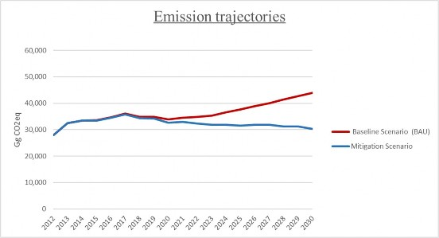
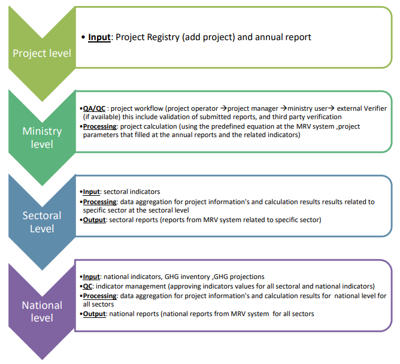
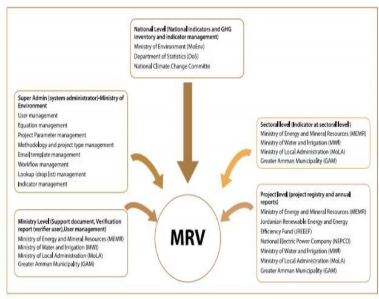

UPDATED SUBMISSION OF JORDAN’S 1st NATIONALLY DETERMINED
CONTRIBUTION (NDC)
October 2021 (Updated version)
This submission is in response to paragraphs 24 and 25 of decision 1/CP.21 with direct commitment to communicate or update its nationally determined contribution (NDC). Jordan has included in this document accompanying information to facilitate clarity, transparency and understanding (ICTU) of its NDC in compliance with Decision 4/CMA.1.
Jordan's updated 1st Nationally Determined Contributions (NDC) document enhances its commitment to the international climate change governance system by raising its macroeconomic GHG emission reduction target from 14% in the 1st NDC to 31% in this current updated NDC, both compared to Business As Usual (BAU) scenario. The new GHG emission reduction target is based on a combination of national policies, programmes and actions as well as international support and finance. The adaptation vision and objective of the updated NDC is directly linked to the recently launched National Adaptation Plan (NAP).
This updated NDC aims at driving Jordan's post COVID-19 recovery process into a lower Carbon and more Climate resilient development pathway steered by national green growth priorities while fully committing to the provisions of the UNFCCC and the Paris Agreement and paving the way for a future Climate Change Long Term Strategy (LTS).
Jordan is strategically located in the Middle East acting as a connection between Asia, Africa and Europe. The country has an area of 89,318 square kilometers with a diverse terrain and landscape with approximately 75% of that space being taken up by desert.
Jordan can be divided into three main geographic and climatic areas; the Jordan Valley, the Mountain Heights Plateau and the Eastern Desert or Badia region. The Jordan Valley which extends down the entire western side of Jordan to the Dead Sea, known in Arabic as the Ghor, is the most fertile region in the country. It is several degrees warmer than the rest of the country with a year-round agricultural climate, high-winter rainfall, and extensive summer irrigation which makes the Ghor to be the food basket of Jordan.
The mountain heights Plateau is the highlands that extends through the entire length of the western part of the country and separates the Jordan valley and its margins from the plains of the eastern desert. This region receives the highest rainfall and is the most richly vegetated in the country. It hosts most of Jordan’s population centers, including the Capital City of Amman, Irbid, Zarqa, Madaba and Karak.
Jordan’s climate is characterized by long, hot, and dry summers and short, cool winters. The climate is influenced by the country’s location between the aridity of the Arabian Desert and the humidity of the eastern Mediterranean area. The eastern Desert or Badia which is part of what is known as the North Arab Desert receives the minimal rainfall throughout the year, averaging less than 50 millimeters annually. The climate in the Badia varies widely between day and night, and between summer and winter. Daytime summer temperatures may exceed 40°C, while winter nights can be very cold, dry and windy.
The Hashemite Kingdom of Jordan is a constitutional monarchy with a representative government. Jordan is divided into twelve administrative areas or Governorates (Amman, Irbid, Zarqa, Balqa, Karak, Mafraq, Ma'an, Tafiela, Jerash, Madaba, Ajloun, and Aqaba). Each Governorate is managed through a decentralization and local administration system that is directly supervised by the Ministries of Local Administration and Interior Affairs.
Jordan's total population was 10,554,000 inhabitants by the end of 2019, unevenly distributed in the country with 90.3% residing in urban areas and 9.7% in rural areas. The total population constitutes of 53% males and 47% females. The breakdown of Jordan population by age shows the structure of a youthful population as the age category of 0- 19 years old represents 44.3% and the workforce category 20-59 years old represents 50.3% out of the total population
The population growth rate was a varying number in the last decade particularly after the Iraqi and Syrian crisis, which triggered unprecedented influxes of refugees. Where the population growth rate for the years (1994-2004) was 2.6% while the number had sharply increased for the years (2004-2015) to be 5.3%. According to the Department of Statistics in year 2015, Jordan hosted 1.3 million of Syrians, of which only 664,226 are registered refugees with the United Nations High Commissioner for Refugees (UNHCR, 2019). About 20% of them are living in the camps, while the rest are living in the urban areas of the country distributing between cities and towns, benefiting from the available infrastructure and basic services delivered by the government and causing an extra stresses on the already limited natural-resources. After almost ten years of the Syrian crisis, Jordan still serves the refugees to meeting their humanitarian and resilience needs for which the government estimates the budgetary cost of hosting the Syrian population at around US$1.4 billion per annum.
Over the past decade, Jordan’s economy grew at an average annual rate of 2.4 percent. However, job creation has not been strong enough to meet the needs of the country’s fast-growing working age population that grew at an average annual rate of 4.5 percent over the decade owing to the large influx of refugees, mainly from Iraq and Syria.
Jordan has been affected by the adverse regional and global political and economic crises. Starting from the global financial crisis in 2009, then the Iraqi and Syrian conflicts which disrupted the trade routes, accompanied with the disruption of favorably-priced natural gas supplies from Egypt in 2011. Then the depressed oil prices in 2014 which caused a slowdown the Gulf countries’ economy which indirectly affected the Jordan’s economy due to the decrease in remittances. The most recent COVID-19 pandemic which has made the fragile macroeconomic situation worse and increased the country’s vulnerability to shocks. The pandemic has hit the country’s economy hard and caused an increase in the unemployment rate to reach 24.7% in the fourth quarter of 2020 rising from 19% in the fourth quarter of 2019, while the highest unemployment rate was recorded for the age category (20-24 years) to be 47.9% rising from 39.7% for the fourth quarter of 2020 and 2019 respectively. By end of 2020 exports decreased by 11.1% while imports decreased by 13.0%.
To address the socioeconomic and health impacts of the pandemic, the government launched two social protection programs in 2020 and 2021 to support vulnerable households and workers, in addition to implementing measures designed to support businesses that were affected by the lockdown, including tax payments, partial payments of salaries, and special loan programs for small- and medium-sized enterprises.
Jordan is losing its natural and fixed assets owing to climate change. Climate change is and will affect Jordan in places where it is already most vulnerable. The climate hazards that Jordan faces are significant temperature increases, precipitation decreases, increased incidents of drought and increased evaporation. Yet, Jordan is heavily dependent on fossil-fuel imports, with limited natural resource, extremely scarce water supply. Extreme heat is driving up energy demand and price, water scarcity driving up energy demand and price and fiscal burden, climate variability damaging infrastructure and affecting services. Jordan’s fiscal situation demands that it finds private sector solutions to these challenges, and that it incentivizes these solutions as part of its development model, to build in resilience and economic growth.
Jordan has started notable improvements in mainstreaming the sectoral development policies and strategies with the national goals of the Climate Change Policy (2013-2020) in particular after Paris Agreement. The government had enacted the Climate Change Bylaw No. 79, year 2019 to ensure full engagement of all partners and stakeholders including both technical and decision makers. The bylaw sets the roles and the responsibilities of the National Climate Change Committee and its structure, as well as the roles and responsibilities of the different line ministries in the national context of the climate change. However the provisions of the bylaw still need more clarification to enforce the legislative oversight functions of the Ministry of Environment which is the focal point of the United Nations Framework Convention on Climate Change (UNFCCC) and its extended protocols.
In order to address these challenges, the government is working to develop instructions to be stemmed from the bylaw to enable the Ministry of Environment to supervise, implement, regulate and monitor the climate change actions at sectoral levels taking into account the legislative and executive mandates of the different national institutions. And pursuant to article 4 of Paris Agreement, the country is currently developing the roadmap for formulating the long-term low emissions development strategy which is anticipated to plan for future with high-resilient to climate impacts and shocks, while achieving a low carbon sustainable economic growth and prosperity, and with opportunities for all. Where the NDC target will be a milestone of the long-term strategy.
The key challenges for sustainable development in Jordan are connected to the sectors of water and energy, as well as agriculture and transport.
The energy sector carries the heavy burden leadership in securing and ensuring energy for a country which suffers from scarcity of fossil fuel resources, combined with the regional instability and conflicts. Energy is the key driver of economic development of Jordan, as it is used to pump water throughout the country, used to operate the industry and transportation, and to drive other key services. According to statistics of Ministry of Energy and Mineral Resources, Jordan currently imports around 93% of its energy which represents approximately 8% of GDP. All this makes the key challenge for the government is to reform efforts to reduce dependency from imports and to diversify the energy mix. So the government chose the more sustainable pathway for energy sector by adopting strategic goals including investment in renewable energy, reduction of energy consumption via increasing energy efficiency, and developing Memorandum of Understanding for electric interconnection with some neighboring countries.
The recently published National Energy Sector Strategy (2020-2030) is a ten-year plan that sets the roadmap to increase self-sufficiency through utilization of domestic natural and renewable sources, to reduce the energy consumption by improving the energy efficiency measures in different sectors, and to reduce the carbon dioxide emissions by 10% by the year 2030. Thus the self-sufficiency scenario will reduce reliance on costly foreign fuel imports that burden the national economy while adopting a low-carbon strategy.
The strategy encompasses opportunities to diversify the fuel types to operate the industrial and transportation sectors by offering the use of natural gas in these sectors. The strategy promotes the use of natural gas in the industrial operations as an alternative lower-cost fuel in order to reduce the production costs and improve competitiveness of the national products by reducing the special tax which was imposed on the use of natural gas for the industrial sector from 16% to 7% with tax reliefs for the first three years. And because the water sector is a high energy-consuming sector, the strategy sets a target the aligned with the Water Sector Strategy to reduce the consumption of energy by 15% through improving the energy efficiency measures by 2030.
The growth of the renewable energy market in Jordan in the last few years was based on economic incentives and a modern legal framework that supported investments. The share of electricity from renewable grew from 0.7% in 2014 to over 13% in 2019, with an estimated avoidance of carbon emissions of nearly 1.5 million tonnes in 2018 (IRENA, 2021). The potential is huge for the growth of renewable energy, and it needs to be linked to a deep reform in the structural operations of the energy sector for more and better diversification and decarbonization of the sector. In addition, renewable energy measures should be developed and implementation in tandem with energy efficiency measures.
Water scarcity has long been a major challenge for the government due to the limited available water resources. The Ministry of Water and Irrigation has stated that the recent rainy season recorded less than 60% of average annual precipitation. The renewable water resources base of Jordan has been estimated of around 780 million m3, of which 275 million m3 is groundwater, with the remainder coming from surface water sources. The regional climate models predict a decrease in winter rainfall and an increase in mean annual temperature which will reduce the renewable water supply and further exacerbate water scarcity in Jordan. The country is being a pioneer in using treated wastewater which is stored inside Wadi dams and then used for irrigation in the Jordan Valley.
The National Water Strategy (2016- 2025) incorporates provisions for climate change, water-energy-food nexus, sustainability of overexploited groundwater resources, the adoption of new technologies including decentralized wastewater management, and reuse of treated wastewater, as well as commercialization and consolidation of wastewater services and increasing private sector participation. The strategy considers the Sustainable Development Goals and is aligned with “Jordan 2025, A National Vision and Strategy”.
As part of the country’s efforts to address the challenges associated with the on-going water scarcity, the government is currently planning the Amman Aqaba Water Desalination and Conveyance Project (AAWDCP) which is announced to be the largest water generation scheme to be implemented in the country. The primary objective of the project is to provide a safe and reliable freshwater supply for Amman and other governorates along the project pipelines route from Aqaba to Amman. The project will include a conveyance system to supply up to 150 million cubic meters of freshwater on a continuous basis to the Amman area.
In agricultural sector, the government developed a ten-year National Strategy for Agricultural Development (2016-2025). Its overall goal is a sustainable development of agricultural resources that will preserve the country’s animal and plant biodiversity, favor an investment environment in the sector and create a close link between production and market demand. This objective will help to reduce the migration rate from rural to urban areas and guarantee of greater food security for the whole country, together with economic benefits of increased exports. In the same context, the government works through the new Jordan’s National Food Security Strategy to transform to more efficient inclusive resilient and sustainable Agri-food systems for better production, better environment, and better life as the food security receives special attention and priority from His Majesty the King. The Strategy objectives are, among others, to assist Jordan to realize its role as a strategic regional hub for food security, to coordinate efforts and interventions related to food security and to minimize food loss and waste. The Action Plan of the Strategy, which is still under development, will be based on five main areas covering the availability, access, utilization, stability in addition to the governance of food security. The Strategy and its Action Plan aim to contribute to the sustainable development goal to achieve zero hunger, as well as to support the country’s recovery plan of the Covid-19 pandemic by addressing and reducing the pandemic’ economic, social and environmental impacts.
The transport and logistics services sector plays a key role in Jordan’s economy and contributes by over 8.2% of GDP (2017).The government has developed the Long-term National Transport Strategy (2016-2030) which defined the sector’s activities including road, rail, maritime, civil aviation. Currently the government is working on updating the national transport strategy after doing an assessment of the challenges and opportunities of the sector to enable the country to drive the process of modernization of the transport system, and to capitalize on its strategic geographical advantages. In addition to aligning the transport strategy with the other national sectoral strategies including, among others, the energy and environment. The new strategy will foster, among others, the use of the intelligent transport systems, the Bus Rabid Transit (BRT), the railway project as well as promoting the investment environment to increase the competitiveness. The transport sector is the second key emitter of GHGs in Jordan (after the energy industries) accounted for 28% of the total GHG emissions in year 2016, therefore the outcomes of the updated National Transport Strategy are anticipated to contribute directly and indirectly to the national mitigation and adaptation measures.
Jordan has taken measures to support the adoption of electric vehicles, yet simultaneous efforts will be taken to expand of the electrical vehicles charging infrastructure. The Energy and Mineral Regulatory Commission (EMRC) currently provides licenses to public and private electric vehicle charging stations and has announced its plans that all new gasoline stations should have electric charging facilities.
The industrial sector in Jordan is considered to be one of the main pillars for the Jordanian economy, having noticeable and multiple contributions in the economic and social development process. The emissions of the industrial processes accounting for 10% of the country’s total emissions. As the key challenges of the sector are the energy and water in terms of cost and availability, the government is promoting toward the goal of resource efficiency and sustainable production and consumption in manufacturing sector which proved to achieve a significant savings in costs, reduction in the consumption of energy, water and other resources, reduction in GHG emissions as well as link to the circular economy principle. The government promote the efficient-energy consumption in industrial sector through incentivizing the energy audit improvement plan and its implementation for SMEs local industries through creating a funding mechanism with cooperation of local banks. On the other hand the government promotes the synchronization of the Kigali Amendment to the Montreal protocol and the Paris Agreement to achieve a significant reduction of high-warming HFCs emissions from the industries that use HFCs, and encourage the efficient cooling technologies as well.
The waste sector which is highly impacted by the challenges in demographics including the rapid rate of population increase (waves of refugees) and urbanization adding more pressure on the services provided by the government including waste collection, transfer and treatment. To address the sector’s challenges, the country has achieved a notable improvement in both the legislative and planning dimensions during the last five years. The sector is governed by the Waste Management Framework Law No. 16 of 2020 which sets the roles and responsibilities of all the competent authorities without confliction of responsibilities to ensure that appropriate treatment and disposal of waste is mandated, and to achieve the priority of ensuring the environmental and human health. Under this law, it is the first time to ensuring the producers and polluters to take responsibility for the treatment and disposal of waste. The National Solid Waste Management Strategy (2015- 2034) and its action plan aims to shift the national solid waste management toward a modern and integrated one using the “Three-Rs” approach (Reduce-Reuse-Recycle) within a span of 20 years. The strategy sets short, mid and long-term targets for the different waste treatment proposed activities including recycling and reduction of the quantities of bio-waste ending up to landfills.
In spite of the unprecedented challenges that were accompanied with conflicts and instability in the region, Jordan is continuing to work towards comprehensive and evolutionary reforms to sustain Jordan’s resilience, whilst increasing prosperity of the citizens by mainstreaming the Sustainable Development Goals (SDGs) in the government
development plans and national sectoral strategies. The government have achieved a significant progress in the energy, water, agriculture, education, health, industry, private sector engagement, and youth and women as the most critical cross-cutting themes. However, in early 2020, Jordan was hit hardly, like the rest of the world, by the global COVID-19 pandemic. The implementation of the public health measures to limit the spread of the virus have severely affected the country’s economy due to reduced productivity, business closures, trade disruption, decimation of the tourism industry, and disruptions in the transportation which cause significant reductions in income and a rise in unemployment.
The government is currently planning to build back better with a focus on green recovery. The planning process started with an assessment of the economic and social impacts of COVID-19 on both the country and the sectoral levels namely, tourism, agriculture, health and energy sectors that had been affected severely by the pandemic. The updated NDC document is a key vehicle in the national efforts for a green post COVID-19 recovery approach.
The considered gases were carbon dioxide (CO2), nitrous oxide (N2O), methane (CH4), sulfur hexafluoride (SF6), hydrofluorocarbons (HFCs), and perfluorocarbons (PFCs). Also, Non-methane volatile organic compounds (NMVOCs) emissions resulting from the solvents subsector were estimated.
According to this inventory, Jordan contributed around 28 million tonne CO2eq of emissions to the atmosphere. A breakdown of Jordan’s total emissions of GHGs by sector indicated that the energy sector was the major emitter with 81% of total national emissions followed by the industrial sector with a contribution of 12%, then the waste sector and Agriculture, Forestry, and Other Land Use (AFOLU) with 6% and 1% respectively.
Table 2.5: Energy sector net emissions (Gg), 2012
|
Categories |
Net CO2 eq |
% |
|
ENERGY SECTOR |
22756.83 |
|
|
Fuel Combustion Activities |
22755.78 |
|
|
Energy Industries |
11296.10 |
50% |
|
Manufacturing Industries and Construction |
1249.19 |
6% |
|
Transport |
7391.60 |
32% |
|
Other Sectors (Residential, Commercial and Agriculture) |
2334.00 |
10% |
|
Non-Specified (Fuels used by the military) |
484.92 |
2% |
The shares of sectors/subsectors emissions within the overall national Inventories are identified and ranked here through share percentages Tables and in Figure below illustrating priority sectors that need to be targeted in mitigation measures:
GHG net emissions and percentages by sector and subsector, 2012
|
GHG Source and Sink Categories |
Gg CO2-Eq |
Sectors (%) |
Subsectors (%) |
|
Total National Emissions and Removals |
27998 |
100% |
|
|
1 - Energy |
22757 |
81% |
|
|
1.A - Fuel Combustion Activities |
22756 |
81% |
|
|
1.A.1 - Energy Industries |
11296 |
40% |
|
|
1.A.2 - Manufacturing Industries and Construction |
1249 |
4% |
|
|
1.A.3 - Transport |
7392 |
26% |
|
|
1.A.4 - Other Sectors (residential, commercial and Agr.) |
2334 |
8% |
|
|
1.A.5 - Non-Specified |
485 |
2% |
|
|
2 - Industrial Processes and Product Use |
3368 |
12% |
|
|
2.A - Mineral Industry |
1531 |
5% |
|
|
2.A.1 - Cement production |
1163 |
4% |
|
|
2.A.2 - Lime production |
8 |
0% |
|
|
2.A.3 - Glass Production |
0 |
0% |
|
|
2.A.4 - Other Process Uses of Carbonates |
360 |
1% |
|
|
2.B - Chemical Industry |
157 |
1% |
|
|
2.B.2 - Nitric Acid Production |
157 |
1% |
|
|
2.C - Metal Industry |
40 |
0% |
|
|
2.C.1 - Iron and Steel Production |
40 |
0.1% |
|
|
2.D - Non-Energy Products from Fuels and Solvent Use |
227 |
1% |
|
|
2.D.1 - Lubricant Use |
227 |
1% |
|
|
2.F - Product Uses as Substitutes for ODSs |
1399 |
5% |
|
|
2.F.1 - Refrigeration and Air Conditioning |
1193 |
4% |
|
|
GHG Source and Sink Categories |
Gg CO2-Eq |
Sectors (%) |
Subsectors (%) |
|
2.F.3 - Fire Protection |
206 |
1% |
|
|
3 - Agriculture, Forestry, and Other Land Use |
237 |
1% |
|
|
3.A - Livestock |
480 |
2% |
|
|
3.B - Land |
-254 |
-1% |
|
|
4 - Waste |
1635 |
6% |
|
|
4.A - Solid Waste Disposal |
1488 |
5% |
|
|
4.C - Incineration and Open Burning of Waste |
5 |
0.02% |
|
|
4.D - Wastewater Treatment and Discharge |
142 |
1% |
* Percentages for the sector and the subsector are based on the total national emissions
Further, in the key category analysis that was carried out within Jordan’s first BUR, levels of sector emissions were calculated based on the contribution of each source or sink category to the total national inventory. The Key categories are defined as those categories that when summed together in descending order of magnitude, add up to 95% of the sum of all. Outcomes indicated that the following Energy, Waste and IPUU subsectors are key sources:
Key category analysis (level assessment) BUR, 2012
|
Sector |
IPCC Subsector |
|
Energy |
Energy Industries |
|
Energy |
Road Transportation |
|
Energy |
Other Sectors – (Commercials, residential and agriculture) |
|
Waste |
Solid Waste Disposal |
|
Energy |
Manufacturing Industries and Construction |
|
Industrial |
Refrigeration and Air Conditioning |
|
Industrial |
Cement Production |
|
AFOLU |
Enteric Fermentation |
|
Industrial |
Other Process Uses of Carbonates |
|
AFOLU |
Forest land Remaining Forest land |
|
Industrial |
Non-Energy Products from Fuels and Solvent Use- Lubricants |
Latest GHG mitigation projections and GHG data updates for the period 2020- 2040 (published in BUR1, 2017).
|
Year |
Baseline Scenario Emissions |
Mitigation Scenario Emissions |
Avoided Emissions |
Cumulative Reduction |
|
MtCO2 Equivalent |
||||
|
2020 |
34.33 |
31.65 |
2.68 |
4.95 |
|
2025 |
31.45 |
27.44 |
4.01 |
7.85 |
|
2030 |
38.18 |
33.64 |
4.53 |
9.46 |
|
2035 |
40.99 |
38.07 |
2.92 |
5.96 |
|
2040 |
45.56 |
40.73 |
4.83 |
9.32 |
Based on the most updated climate projections prepared for the Third National Communication (TNC) report in 2014, the following represent the key climate projections for Jordan:
All models predict a warmer climate with strong confidence in temperature increase. In 2070-2100, average temperature increase could reach +2.1°C [+1.7 to +3.1°C] under the RCP 4.5 scenario, and +4°C [3.8- 5.1°C] under RCP 8.5.
In addition, the dynamic projections predict a drier climate with medium confidence. In 2070-2100, the cumulated precipitation could decrease by 15% [-6% to -25%] using RCP 4.5 scenario and by – 21% [-9% to -35%] under RCP 8.5. The decrease would be more marked in the western part of the country
The future projections indicated a warmer summer, drier autumn and winter with medium confidence. The warming would be more significant in summer, and the reduction of precipitation more important in autumn and winter than in spring, with for instance median value of precipitation decrease reaching -35% in autumn in 2070-2100.
The dynamic projections predict more heat waves with high confidence and the analysis of summer temperature, monthly values and the inter-annual variability reveal that some thresholds could be exceeded. For instance, in pessimistic but possible projections, for a summer month, the average of maximum temperature for the whole country could exceed 42-44°C.
The future projections also indicate more droughts, where the maximum number of consecutive dry days would increase in the reference model of more than 30 days for the 2070-2100 period. In contrast, annual values still show possible heavy rainy events at the end of the century. More intense droughts would be (partly) compensated by rainy years, in a context of a general decrease of precipitation. Potential evaporation would increase
Jordan employs a framework of institutional and policy instruments in the planning and implementation of its climate actions that constitute the structural tool for the development and implementation of NDC within the context of the overall climate policy and action fields in the country.
Jordan succeeded in developing the first NDC in 2015 under the coordination of the Ministry of Environment being the Chair of the National Climate Change Committee. The Ministry at that time adopted the participatory approach to convene the governmental institutions, the private sector and other non-state actors. However, there was no defined regulatory framework to guide the national process, the Ministry succeeded in developing the first NDC under the guidance of the overarching national Climate Change Policy of Jordan 2013-2020 which encompassed the national strategic objectives and measures for mitigation and adaptation.
In year 2019 the Climate Change Bylaw (No. 79, 2019) was enacted to provide a regulatory framework for climate-related actions. The Bylaw establishes the climate change institutional arrangement in Jordan through the National Climate Change Committee (NCCC) being responsible for oversight and coordination. And pursuant to its provisions, the National Climate Change Committee is chaired by the Ministry of Environment and consists of the 16 secretary generals from the line ministries. Serving as a national focal point for the United Nations Framework Convention on Climate Change (UNFCCC) and its Protocols and Funds, the Ministry of Environment is the government agency responsible for preparing and tracking the implementation of the NDCs, reporting to the UNFCCC Secretariat, developing the National Adaptation Plans and any other documents in accordance with the international obligations in this regard. The Ministry is responsible to establish and manage the Measurement, Reporting and Verification Registry System, and to coordinate with the relevant authorities to develop the National Climate Finance Plan and to benefit from the market mechanisms/instruments that would prove its viability with the national circumstances.
The effective implementation of NDCs is determined not only by the leading role of the Ministry of Environment but by ensuring an economy wide adoption of the NDC targets, programmes and measures in sectoral plans implemented by all public, private and civil institutions.
The National Energy Strategy (2020-2030) aims to increase the proportion of electricity generated from local sources from 15% in 2019 to 48.5% in 2030. The energy efficiency of all sectors will increase by 9 percent in 2030 compared to 2018, and that of the water sector by 15 percent in 2025. One of the most important targets of the Strategy is to reduce carbon emissions by 10%. For the waste sector, the government adopted a National Municipal Solid Waste Management Strategy (2015-2034) which assures the importance of taking the reduction in greenhouse gases as a key performance evaluation for approving the municipal solid waste management projects taking into account the environmental and economic opportunities associated with such projects.
The water sector, as well, developed the “Climate Change Policy for Resilient Water Sector” in 2016 which provides the background, concept, solutions, and implementation mechanisms for building resilience. This policy explicitly assures the importance of conformity between the sectoral national policies as well as the international policies particularly the Paris Agreement for developing robust solutions and building resilience for sustainable development. The agriculture sector which impacted by the climatic changes that affect the agriculture production in Jordan has recently developed the “ Climate –Smart Agriculture Action Plan” which aims to strengthen farmers adaptation and resilience to climate change and support mitigation efforts as well.
At the local levels the Greater Amman Municipality (GAM) has developed various climate change plans that aims at reducing GHG emissions and enhancing resilience. The key plans are;
The city of Amman, The Capital of Jordan, as part of the 100 Resilient Cities has developed in year 2017 a resilience strategy based on 5 main pillars to become an integrated, smart, environmentally proactive, innovative, prosperous, young, equal, proud, and united city. A total of 16 goals and 54 related actions have been designed to help the city to fulfil the ambition of being a resilient city.
Amman Climate Action Plan is an accompanying document to the Amman Resilience Strategy. Where one of the initiatives of the Resilience Strategy is to create a climate action plan to mitigate emissions under the environmentally proactive city pillar. Taken together, these two documents chart a path forward for Amman toward a more prosperous, resilient and low-carbon future.
Amman, as Part of C40 Cities, has committed to delivering a GHG emission neutral and climate resilient city by 2050. The city also committed to creating a plan and a pathway for reaching that target, with an interim target of a 40% reduction over the 2014 baseline by 2030.
It is the most recent and comprehensive plan the reflects the serious ambitions of the city of Amman to improve the environmental concerns and improve the quality of life of its citizens as well as addressing the climate change. The plan proposes 37 short-term actions, nine of which are designated as “priority actions” and long-term actions that include infrastructure investments, policy measures, capacity development, and advocacy, all of which are designed to help achieve the vision for a green Amman.
In order to mainstream the Nationally Determined Contributions in the subnational planning processes, two different pilot projects were implemented to support the local authorities in responding more actively to sustainable policy challenges including climate change, and to build their capacities to formulate and implement more sustainable local policies aligning with the Jordan’s NDC.
The first project targeted the large municipalities, namely Greater Irbid Municipality, Municipality of Karak, and the Aqaba Special Economic Zone Authority (ASEZA). The training and technical assistance were provided for the municipalities’ staff and the local key stakeholders which enabled them to develop their local Sustainable Energy and Climate Action Plans that fit their local needs. The second project was implemented in 2019 in another three medium-sized municipalities namely, Municipality of Deir Alla (north of Jordan), Municipality of Aloyoon (middle), and Municipality of Basseera (south). The three municipalities had developed their Local Climate Action Plans (LCAPs) based on the local relevant climate actions, socio-economic analysis, capacities assessment, availability of plans, staff availability, institutional structure, and data availability to define key indicators to cover both the mitigation and adaptation objectives.
This NDC document specifies Jordan's climate commitments in GHG emission reduction and enhancing climate resilience until 2030 and will be subjected to further modifications and increases in ambition in the future. The objectives and targets of this NDC document will be aligned with the Long Term Strategy (LTS) that the Government of Jordan is currently developing in the form of a new climate change policy for 2050. The new climate change policy will introduce long term targets and measures for enhancing adaptive capacity within the context of a climate vision that aims to move towards a net zero carbon economy.
Jordan adopted the 2030 Agenda and developed a Roadmap for Sustainable Development Goals (SDGs) implementation, mainstreaming the SDGs into national/sub- national planning, budgetary and monitoring frameworks and institutional mechanisms put in place to achieve its commitment to leaving no one behind.
Jordan focused on ensuring efficient alignment by incorporating the SDGs in national frameworks, including “Jordan 2025: A National Vision and Strategy”, The Government Executive Development Program (EDP), The Governorate Development Programs, The Jordan Response Plans for Syria Crisis as well as all the national plans and strategies. And to avoid overlapping mechanisms during the implementation of 2030 Agenda, the government opted to build upon the existing institutional frameworks. Where the National Higher Committee for Sustainable Development provides guidance and follow up on all decisions, priorities and recommendations related to 2030 Agenda. The committee which was established in 2002, following the announcement of MDGs, and was expanded in 2017 to include broader government and civil society participation.
Currently, the government is focusing on strengthening linkages between planning, budgeting and financing for climate, which is a key priority with the potential to have a transformative impact on all other SDGs. It is found that investing in adapting to and mitigating climate change has the potential to accelerate progress in many other SDGs, with the available potential to work with public and private investors on aligning their business models and investments to the SDGs which will lead to more effective resource allocation and catalyze additional financing for national SDGs priorities.
The most recently published Indicative Executive Program (2021-2024) represents the governmental planning framework that focuses on sector strategies and fiscal reforms as well as taking into consideration the existing government projects including the Public Investment Management Program, the Five-Year Reform Matrix, and the Public-Private Partnership (PPP), which will have a positive impact on future socio-economic planning, prioritizing objectives and allocating financial resources for these priorities. The program integrated the sustainable development goals (2030) into the national priorities as part of Jordan’s roadmap for the future.
In the GIEP (2021-2024), the government stresses on the future opportunities for stimulating the green growth and implementing the climate change measures as sustainable solutions to address the country’s economic vulnerability. The program indicated supportive measures to enhance the implementation of the NDC Action Plan and Green Growth Action Plan including harmonizing the national policies to maximize the benefits of transitioning to low carbon economy, among others, to attract foreign investment, create job opportunities, and mobilize the international climate finance and the new international carbon market instruments.
Green growth is an approach for achieving a number of simultaneous objectives that brings Jordan closer to its sustainable development ambition.
The National Green Growth Plan (NGGP), which was developed in 2017, applies green growth to Jordan as a practical approach that builds upon existing government strategies, primarily Vision 2025, and demonstrates pathways to achieving them in a sustainable way taking into account the factors that impact on the country’s economic, social and environmental development in the longer term.
This NGGP focuses on 6 priority sectors that provide coverage of key green growth issues and opportunities for Jordan to outline green growth frameworks and actions for energy, water, agriculture, tourism, transport and waste. They include sectors identified as high- potential growth areas, such as tourism, and sectors that threaten to inhibit Jordan’s development if not properly managed, such as the water sector.
The plan identifies the interlinking desired outcomes of green growth opportunities in Jordan to be;
Sustained growth for the Jordanian economy
Maintaining and enhancing Jordan’s biodiversity and ecosystems services
Inclusive and equitable growth for Jordan’s population
Reducing GHG Emissions from Jordan-
Ensuring Jordan’s environmental and economic resilience into the future
The NGGP introduced the concept of clusters to demonstrate the mutually reinforcing benefits derived from grouping green growth interventions. Three clusters have been identified; Green Growth Corridor, Smart Urban and Rural Resilience. The green growth corridor has a specific geographic focus, being the important north-south route between Aqaba and Amman. In contrast, the smart urban and rural resilience clusters are thematic, and could be applied to a range of rural and urban areas in Jordan.
In late 2018 as a next step toward implementation of the recommendations in the National Green Growth Plan, under the request of the Cabinet of Ministers, the Green Growth National Action Plans 2021-2025 began to be developed. The Green Growth National Action Plan (GG-NAP) outlines sector-level green growth frameworks and actions for the Agriculture, Energy, Tourism, Transport, Waste and Water sectors to support implementation of Jordan’s green growth vision and strengthen future ability to recovery and contain shocks from catastrophic events such as COVID-19.
To motivate the progression in NDC implementation, the Government of Jordan developed and validated the NDC Action Plan in 2019. It is results-based implementation plan that emphasizes adaptation and mitigation actions prioritized in key sectors which were already covered in the First NDC, namely transport, energy, agriculture, health, water and waste management. The Action Plan was then circulated through the NDC Partnership’s network to seek international support for implementation.
In year 2020, with the support of the Partnership’s Climate Action Enhancement Package (CAEP), the government worked further to prioritize 35 actions out of the whole actions included in the NDC Action Plan and to prepare a cost-benefit analysis for them in addition to developing a Climate Finance Strategy to facilitate reaching out funding sources.
Currently, the government is working to integrate the sectoral actions included in the NDC Action Plan with the government’ Executive Development Program (EDP) which will improve their national-priority levels for allocating financial resources and readiness for implementation in the next three years of the government plan.
Jordan acknowledges the fundamental role of private sector in achieving the economic, social and environmental development. In this regard, the government developed the Jordan Economic Growth Plan (2018-2022) to recapture the growth momentum and realize the development potential over the coming five years. The plan addresses 19 areas of enabling environment including 23 private sector investments among others. The identified investment opportunities distributing over ICT and infrastructure and economic sectors. Although Jordan’s experience in Public-Private Partnership started in the last decade, the government still committed to move forward with reforms and enabling the Jordanian economy to be more resilient to macroeconomic challenges. For this objective, the government had recently adopted the new Public-Private Partnership Projects Law No. 17 of 2020 to be the legal reference and institutional framework for the private sector investments and to enable future PPP projects in the country.
At sectoral level, the government cooperate with the local banks by designing a financing mechanism comprising a financial contribution from the Jordan Renewable Energy and Energy Efficiency Fund (JREEEF) to promote the use of renewable energy and energy efficiency in residential and industrial sectors to contribute to reducing the final energy consumption.
There is a need to streamline the process of creating and sustaining high skill green jobs. Establishment of a green jobs council or similar body, with a strong representation of private sector and key public sector stakeholders could be explored. This could lead demand-side and supply-side assessments to identify gaps in Jordanian ecosystem in terms of green technology and green entrepreneurship skills; supporting and coordinating private sector-led green technology skills’ development and national awareness activities
The inequitable distribution of resources, decision making powers and services are disproportionately affecting women's role in climate response plan and in natural resources management in general, especially in rural areas.
The National Climate Change Policy (2013-2030) (NCCP), the National Adaptation Plan (NAP) and the Third National Communication report (TNC) all pledged to address gender inequalities through mainstreaming a gender perspective in relevant climate change adaptation and mitigation policies, strategies and action.
Transformative change relies on translating the gender equality commitments to practical actions that address root causes of inequalities, discrimination, and imbalanced distribution of resources, unequal power relations, and marginalization. Promoting gender equality, social justice, inclusion and equal human rights entails a strategic shift in recognizing the differential circumstances among and between groups of women, men, girls and boys that calls for approaching priorities, designing action, planning implementation and monitoring progress in a more responsive and targeted manner.
Considering the magnitude of priorities that are on women organizations’ agenda, it is essential that synergies are drawn to find the common grounds between gender equality, women empowerment and climate change activists and practitioners to mitigate the long term impact of climate change on women and promote collaboration and cooperation.
Although communities are affected by climate change differently, the local narrative falls short from establishing the linkages. Women are particularly disadvantaged as their access to information and knowledge are frequently constrained. Nonetheless, women’s knowledge and coping mechanisms are at the core of adapting to climate change impact and or mitigating emissions
Acknowledging the different impact of climate change on women, men, girls and boys, and the need for adopting gender-responsive solutions to improve the gender resilience to climate change, Jordan is currently pursuing to move forward with gender mainstreaming in climate change action by developing the National Gender Mainstreaming in Climate Change Policy which encompasses the development of the framework for addressing the gender inequality and a strong local discourse on gender equality and climate change to advance progression towards achieving the national sustainable development goals.
Human rights based climate planning should take into priority the needs and rights of the most vulnerable groups in Jordan. NDC implementation could provide an adequate framework for the integration of vulnerable groups in climate mitigation and adaptation projects that also respond to key socioeconomic developments in Jordan. Some of the most vulnerable groups include:
Children: UNICEF has recently issued a landmark global climate risk index for children which uses data to generate new global evidence on how many children are currently exposed to climate and environmental hazards, shocks and stresses. A composite index, the CCRI brings together geographical data by analyzing 1.) Exposure to climate and environmental hazards, shocks and stresses; and 2.) Child vulnerability. In the global ranking Jordan was situated in the middle rank at a medium-high risk status which raises the seriousness of the need to address such challenges at the national level. Children sensitive climate planning should be a key element in the NDC implementation and future climate policy and programmes in Jordan.
Refugees: Jordan has been feeling the impacts of all regional wars and conflicts in the past decades. In fact Jordan can be considered as the second most impacted country in any regional conflicts as it has acted as a destination of many refugees which have been assimilated and integrated in the Jordanian social fabric. The increase of the number of population due to refugee influx in the past decade has caused a population increase of up to 10% which has put additional stress on natural resources. Climate change will definitely exacerbate the already felt increased use of natural resources due to refugees and any plan to enhance the economic resilience of Jordan for assimilating refugees will need to a climate responsive plan as well.
Unemployed: With a huge increase of unemployment among Jordanian youth and refugees the main priority for the economy is to generate new jobs. Linking NDC implementation with creating new green jobs will empower NDC implementation to serve national economic and social priorities along with addressing global climate responsibilities.
Disabled: Implementation of NDC and climate plans should take into consideration the need to create adequate spaces, tools and empowerment opportunities for the increasing percentage of disabled people in Jordan. Development of green infrastructure at urban areas should include disabled friendly options, while creating new green skilled labor opportunities could integrate the disabled through learning, awareness, education and management career paths that are based on possibilities of disabled people to enter the market by taking chance of opportunities created by virtual working environments. Adaptation and mitigation measures that are disabled friendly should be considered as social priorities in addition to their climate friendly nature.
The GHG Mitigation analysis and the identified measures within this updated NDC covers all the IPCC sectors (Energy, industrial processes and product use, agriculture, forestry and land-use, and waste) and the target is an economy wide target. The information provided in this section are based on IPCC sectors categorization.
The Business as Usual (BAU) scenario was developed by using the 2012 GHG inventory as a base year. The 2012 GHG inventory data was compiled according to 2006 IPCC Guidelines and its 2019 Refinement for National Greenhouse Gas Inventories. The BAU and mitigation scenarios were developed for all sectors using the "Low Emissions Analysis Platform” (LEAP) software. The covered gases are: CO2, CH4, N2O and the fluorinated greenhouse gases (HFCs).
The BAU scenario was developed for the period (2012-2030), it considers a future in which no additional measures are implemented (business as usual), resulting in higher energy demands and carbon intensity. It does not consider energy efficiency improvements nor the fuel shift towards natural gas in the residential, commercial, and industrial sectors. Fuel shares are projected based on historical trends, with a constraint of maximum ±1% annual growth.
The main macroeconomic data and figures considered for the baseline scenario were obtained from the official sources as follows.
Economic Growth Rate: The economic growth rate or the Gross Domestic Production (GDP) considered in the baseline scenario was obtained from Ministry of Planning and International Cooperation (MoPIC) (COVID-19 impact was taken into consideration).
The value added for economic sectors was also considered as stated in the “Jordan 2025”.
Jordanian population and non-Jordanian population and the family size, the growth rate for both Jordanian and non-Jordanian were obtained from Department of Statistics-Jordan (2015 Census).
The official discount rate of (8%) as announced by MoPIC was considered.
The energy data for historical period were obtained from the Jordan energy balances issued by the Ministry of Energy and Mineral Resources (MEMR) which illustrate the energy flow from supply side, transformation and demand side.
Key assumptions for developments of the Business-As-Usual scenario were taken from the following main sources:
National Strategies (Energy, Waste, Water and Transport),
Population and GDP: Department of Statistics (DOS) and MoPIC
Local Climate Action Plans,
Basic consumption data obtained from annual reports of national entities and Ministries.
Thirty two mitigation actions were selected based on consultation with stakeholders and from:
The Government indicative executive program (GIEP).
The Cost Benefit Analysis Report for the 35 priority Actions contributing to Jordan’s NDC)
Jordan’s Second BUR.
Newly identified Projects
Total actions in scenarios cover: Energy Sector, Transport Sector, Waste Sector, Industry Sector and Agriculture and Forestry Sector.
Energy measures including renewable energy and energy efficiency targets up to 2030 were considered and estimated, namely;
Renewable energy to contribute 35% of electricity generation by the year 2030,
And, improving efficient energy consumption in all sectors by 9%.
Outcomes of the analysis of the actions resulted in the target of total GHG emission reduction of 31% in 2030 compared to BAU in 2012 (description of actions is in Annex 1)
|
Selected Years |
Baseline Scenario Emissions (BAU) |
Mitigation Scenario |
|
|
Mitigation Scenario Emissions |
Avoided Emissions |
||
|
Gg CO2eq |
|||
|
2012 |
27,998 |
27,998 |
0 |
|
2015 |
33,516 |
33,443 |
73 |
|
2020 |
33,941 |
32,705 |
1236 |
|
2025 |
37,655 |
31,601 |
6054 |
|
2030 |
43,989 |
30,291 |
13698 |
|
*The Estimated Mitigation Target is 31% |
|||
|
** Resulting target was calculated by dividing the accumulative emissions avoided till 2030 by the total emissions in 2030 resulting in the BAU scenario [target% = (accumulative emissions by 2030/BAU-2030 emissions)* 100] |
|||
The mitigation scenarios vs BAU scenarios is illustrated in figure 1

Figure 1: the GHG trajectory of the proposed mitigation scenarios vs BAU scenario.
The energy sector is by far the major source of GHG emissions in Jordan. The sector is a fundamental to economic and social development as the country imports 93% of its total energy comprising almost 8% of Jordan’s GDP. The Ministry of Energy and Mineral Resources has recently published the National Energy Sector Strategy (2020-2030). It is a ten years plan aims to place the roadmap to increase self-sufficiency through utilization of domestic natural and renewable resources, as well as expansion of existing energy developments thus reducing reliance on costly foreign imports that burden the country’s economy.
The energy measures that are considered to achieve the NDC target are;
Increased percentage of electricity generated from renewables1 to have a share of more 35% by the year 2030
The Aqaba Amman Water Desalination and Conveyance Project (AAWDCP) - Wheeling Project, 185 MW PV (50% of the overall needed power demand).
Introduction of concentrated solar power (CSP) of 100 MW and CSP 300 MW
Improving efficient energy consumption in all sectors by 9%
Energy measures in Residential sector
Natural gas distribution in the main cities ( Amman , Zarqa , Aqaba )
Solar water Heaters (SWH) Project for 90,000 houses
Energy Efficiency Projects in industry:
Returning Un-Returned Condensate to the Feed Water Tanks in Food Industry
Insulating the un-insulated pipes, fittings and tanks in food industries
Using Regenerative burners instead of conventional burners in Steel Reheating Industry.
Transport sector is the largest energy consumer in 2018 with a share of 49%, however it is a primary infrastructure and service sector required to drive the wheel of growth for other economic sectors. The measures that are considered to achieve the NDC target are;
Bus Rapid Transit Project (BRT): According to Cost Benefit Analysis Report of the priority actions contributing to Jordan’s NDC, this project involves the planning, design and implementation of the second stage of a BRT network in Amman. It will be integrated with the fare collection system for BRT Phase 1 and other public transport in the city. Key activities include construction of four additional BRT lines (as there are already two under construction), followed by implementation of fare- collection systems.
Future electric bus fleet: this project aims to provide new bus services for the cities of Irbid and Zarqa with a public sector funded model. This project involves the establish of electric transportation networks in two urban cities, Irbid and Zarqa, through the government’s acquisition of 100 new electric buses for the designed public transport organizations to operate, as well as the development of complementary aspects for the success of its implementation, which mainly includes the construction of supporting infrastructure. Each city will have a public sector organization to oversee the operation of the system, be responsible for funding and to plan service changes.
Intelligent transport systems (ITS): According to Cost Benefit Analysis Report of the priority actions contributing to Jordan’s NDC, this 5 year project involves integrating information and communication technologies into transportation in order to increase the efficiency of the system. This includes installation of TV surveillance systems, electronic tracking and electronic payment systems and electric card charging devices. Daily monitoring and maintenance are also an important aspect of this project. Overall, this will deliver improved congestion and reduced journey times
Promoting hybrid and electric cars at national level -including 50% of the Public fleet will be EVs- and assuming annual increase in private cars adoption by 2% (this project was developed based on received study from Ministry of transport (letter No. general/152/004382) and based on Energy National Strategy (2020- 2030))
The industrial sector is considered to be one of the main pillars for the Jordanian economy contributed directly to about 24% of the national GDP in 2017. That is, the sector employing more than 240,000 people in 18,000 industrial facilities distributed in the country.
The industrial sector consists mainly of two types the manufacturing and the mining sectors. It is running mainly by the private sector which is steering by the potential viability of the investment in climate interventions. The measures that will contribute to the NDC target are the following;
Use of steel slag and/or fly ash to substitute the raw materials needed to produce clinker
Increase the percentage of Pozzolana in CEM II
Produce new cement product CEM IV with 45% of Pozzolana
Use of biomass (MSW or/and Sewage Sludge) as alternative fuels
Installation of a catalyst system for mitigation of N2O emissions in Nitric Acid production at the KEMAPCO company in Aqaba
Implementing pilot interventions to scale-up the sustainable use of cooling technologies with climate-friendly gases.
The sharp increase in population in the last decade due to mass influxes of refugees as well as the improved living standards caused a sharp increase in the municipal waste growth rate. All this puts a substantial burden on municipalities that provide the services as well as on the surrounding ecosystems. In 2012, the waste sector accounted for 6% of Jordan’s total GHG emissions. The sector will contribute to the NDC target by implementing the following interventions;
Biogas collection and utilization from Al-Dhulil, Al-Salt and Madaba domestic solid waste landfill. The proposed projects aim at collecting the generated biogas, treating it for impurities, generating electricity by introducing biogas generator and connecting the generated electricity to the national electricity grid. The suggested projects will contribute to reducing the amount of fuel used for electricity generation.
Biogas generation by utilizing the sludge generated from the Wadi Arab, Baqa’a, Ramtha and Salt and Madaba domestic wastewater treatment plants. The proposed projects aim at generating biogas from the sludge and connecting the generated electricity to the national electricity grid. These projects will contribute to reducing the amount of fuel used for electricity generation, taking into consideration that a considerable amount of sludge produced from the wastewater treatment plants without any utilization.
Implementing composting units for pre-segregated bio-waste in 4 Areas with a total capacity of 200 tonnes/day
The GHG emissions of agriculture and forestry activities in the year 2012 accounted for around 1% of Jordan’s total emissions. The sector was found to be a net emitter not a sink for GHGs, and accordingly with only a small forest area of less than 1% of the country’s total area, it is important to direct our national efforts to increase forests areas and to protect existing forests through higher law enforcement.
The agriculture and forestry projects that will contribute to achieving the NDC target will be implementing the following measures;
Climate smart agriculture.
Urban tree plantations
Rangeland restoration
Forest tree and side road Plantations
In addition to the direct GHG reduction measures that were presented in the sections above, ambitious combination of policies and technologies can potentially provide a promising GHG emission reduction schemes that can be implemented over the next years which will add to what has already been identified in the sections above.
The following are examples of emerging mitigation measures to be explored, quantified and proposed in the future NDC update cycles in various sectors as follows:
The acceleration of RE production in Jordan, reaching a share of 13% of electricity production in 2019, and the series of new RE projects that are being either constructed or planned, pushes the RE capacity to a close to saturation of the grid, according to the perspective of the Ministry of Energy and Mineral Resources. By the end of 2021, 1600 MW of PV and 715 MW of wind energy are scheduled to be grid connected; any planned continuation of the growth of RE production requires solid and stable infrastructure of RE storage. Energy storage is becoming more and more an attractive option that will need to become a part of the energy services toolkit of the Jordanian system, as a means of ensuring the provision of stable, high quality power supplies, in particular in the context of increased penetration of variable renewable energy sources. Currently, a few private sector companies are designing storage capacities with market based investments.
Thanks to its enormous potential for electricity production from renewable energy, Jordan could prospectively play a significant role in the emerging global hydrogen market. Stepping up hydrogen product will not only open a new export market for Jordan and thereby create new economic opportunities, it will also help the country in decarbonising its own energy supply as well as decrease its dependency on imported energetic commodities. Having similar properties as natural gas, hydrogen is especially useful in replacing carbon-intense fuels in sectors that are hard to electrify, such as maritime transport, aviation, and heavy land transport. In order to partake in the global hydrogen market, however, Jordan must ensure that its production fulfils the sustainability criteria set by import countries with regard to the electricity production for desalination and electrolysis as well as in respect of water demand and ecologic impact. There is additional potential in the hydrogen value by using its derivatives, in particular ammonia. This is relevant for Jordan’s fertiliser industry.
While currently no quantification of the hydrogen potential in Jordan is available, several public and private sector entities are in the process of providing such analyses which are expected to be available latest in the second quarter of 2022.
Adopting a “compact city” planning approach (e.g. developing within the urban boundaries (i.e. infill development close to jobs and public transport) as opposed to rapid urban expansion on the fringes which will add to more transport and infrastructure needs) could lead to a reduction in GHG emissions by 13.8% in Amman (compared to BAU); 11.5% in Irbid; 6.3% in Mafraq; 2.9% in Russeifa; and, 2% in Zarqa. In addition to GHG benefits, the models also show substantial cost savings for municipalities.
Complementing the point above, some municipalities show the potential to increase green spaces through planting trees and through implementing neighborhood-level solutions to address better walkability and use of non-motorized forms of transportation, use of urban design, and adoption of more greenery/green/nature-based infrastructure/solutions that not only helps with issues such as flooding, but can also mitigate heat islands and energy load etc. at an urban design scale.
It is crucial to introduce the whole cycle of solid-waste management in GHG mitigation reduction calculations (including intermediate steps like constructing transfer stations,
fleet management, etc.) In addition, constructing new/additional cells in landfills may not be sufficient, if necessary engineered measures in the landfill are not taken and if measures such as landfill gas recovery, etc. are not considered; and (b) whether any interventions to reduce and recycle waste (e.g. residential, reusing construction waste etc.) could be readily implemented and included.
There are contestability/competition issues in freight and transport of passengers that undermine incentives to modernize the fleet and make it more adequate to the needs of various sectors, including tourism. There could be different actions undertaken to create better incentive system for operators / owners of trucks and buses, from minimum emission standards to providing financing for renewal of fleets, to resolving the market entry barriers.
There is extensive potential for green building retrofitting of existing building stock (which covers the majority of urban areas) through (a) adoption of green building codes; (b) consider water and/or energy use in buildings; (c) energy efficiency in public buildings and public spaces.
Deep integration and upscaling of energy efficiency, resource use efficiency and reuse as well as circular economy principles and practices can constitute key measures that will enhance GHG reduction in the industrial production sector. A combination of technological advancement and introduction of conducive policy measures could be explored to provide a driving force for a more sustainable and climate friendly industrial production in Jordan. In the business area in general, entrepreneurs could play a major role in disseminating information (e.g., via digital platforms) to households and MSMEs about actions they could take to be more resource efficient; for introducing and rolling out services in high impact segments, for example, in insulation, heating, etc. There is also potential for making it easier for companies to engage in the shared services business models to reduce the carbon footprint, support functions to increase exports of green goods and services.
The Government of Jordan had initiated its efforts toward climate change adaptation since 1999, where it was the first developing country that has submitted the Initial National Communication to the UNFCCC including a comprehensive vulnerability analysis. Efforts towards climate change have continued where the second national communication report (SNC) was submitted in 2009, covering key vulnerable sectors in the country and relevant adaptation issues and actions. In addition, the first comprehensive adaptation programme covering water, agriculture, health and education under the title “Adaptation” to Climate Change to Sustain Jordan’s MDG Achievements” was implemented over the period 2009- 2011. Moreover, the first National Climate Change Policy framework for adaptation was developed in 2013 with three key policies and strategic documents which are: (i) the National Climate Change Policy (2013) (ii) the Third National Communication to the UNFCCC including downscaling climate projections for the first time in Jordan (2014); and (iii) its Intended Nationally Determined Contributions (INDCs) (2015).
In 2019, the Ministry of Environment issued the climate change bylaw No. 79 for the year 2019 to ensure full engagement of all partners and stakeholders including both technical and decision makers. The bylaw set the procedures for climate change activities and planning processes, to be ratified by the national climate change committee that includes key stakeholders. Jordan is expected to finalize its Fourth National Communication (FNC) exercise in 2022
The government has adopted in 2021 the National Adaptation Plan (NAP) which consolidate the country’s vision on adaptation supported by the prioritized adaptation actions that link the economic sectors and country level vulnerabilities to enhance long- term resilience and adaptive capacity with consideration for gender and the needs for the most vulnerable groups. The NAP identified seven vulnerable sectors to climate change, these are the agriculture, water, urban, biodiversity, coastal, social and economic development and health. The plan includes the sectoral vulnerability analysis, the sectoral adaptation measures and the roadmap for implementation. The participatory approach that was followed in developing the plan assured that its objectives are embedded in the country’s fabric of development.
Based on a detailed vulnerability assessment the NAP has developed a programme of key interventions for priority adaptation sectors. The programmes are flexible and open to many measures that can be implemented as either:
Policy based measures.
Technology based measures.
Social mobilization based measures.
Nature based measures.
Economic development based measures.
Addressing adaptation challenges in key sectors (i.e water, agriculture) represent the backbone of Jordan's sustainable development challenges and has been integrated within the key development related sectors.
The following pages provides a description of key strategic objectives for increasing adaptive capacity and resilience to climate change impacts in Jordan that should be implemented using national and international resources. Annex 2 provides a summary of key investment projects in adaptation related sectors that have been identified through national climate related action plans including the Green Growth Action Plans and The NDCP Action Plan.
Water is the defining sector for adaptation to climate change in Jordan. Being one of the world's most water scarce countries, the multiplier impact of climate change will only add to the complexity of the water demand management challenges Jordan has been facing and will continue to face. The new Water Master Plan, currently being developed by the Ministry of Water and Irrigation will have Climate Change impacts as one of its pillars.
In 2018 UN ESCWA published the results of the AR5 (2014) related RCM for the Middle East (RICCAR). This model is currently being refined for Jordan, based on an 8 km grid resolution. The following represents main outcomes from this study:
Lower water resources availability: Climate change will reduce both, surface and groundwater resources availability, by 15% until 2040. As a result, the internal long-term conventional water resources availability will decrease even further from current levels of 680 MCM (65 m³/ca/yr) to 580 MCM (46 m³/ca/yr) in 2040. The occurrence of snow would strongly decrease; therefore, groundwater recharge might even decrease further.
More frequent and extended drought periods, more heat waves: the number of consecutive dry days will increase in particular in the western region, where currently rainfed agriculture is possible.
More frequent flooding events: the number of heavy precipitation days is slightly increasing, in particular in the south.
Strong increase in evaporation: more water will be evaporated from plants, water bodies, leakage losses
In addition, there are a few indirect consequences of climate change vulnerability of water sector on related sectors and developmental priorities in Jordan:
Agriculture: due to lower precipitation, the area where rainfed agriculture is possible will significantly shrink. Due to higher temperatures and evaporation, more water will be needed for irrigation. To maintain agricultural production at the same level more water may be required for more irrigation. Higher temperatures will affect plant growth and thus reduce agricultural productivity.
Domestic water demand: with higher summer temperatures, consuming water will be increased significantly during the hot summer.
Water quality: lower precipitation and higher temperature will mean that salinity in surface and groundwater will rise. Therefore, desalination will be increasingly required for domestic water supplies.
Moreover, increased evaporation and decreased rainfall will lead to several impacts on the water sector such as less recharge and therefore less replenishment of surface water and groundwater reserves, which will result in serious soil degradation that could lead to desertification in the long term. Increased evaporation of surface water will also reduce its quality increasing its salinity and decreasing its oxygen content as well increasing the pollution levels.
The key strategic approaches for addressing adaptation challenges in the water sector are the following:
The MWI and the water sector in general is undergoing a deep and effective institutional reform process that provides a perfect opportunity to introduce a structural approach for climate resilience at the legal, policy and institutional levels at the Ministry of Water and Irrigation and relevant public authorities responsible for water resource management. This includes:
Structural integration of climate change impacts and adaptation in the new National Water Masterplan
Strengthening the human, technical and administrative capacities of the Climate Change Directorate at Ministry of Water and Irrigation and related Authorities.
Adopting a vulnerability approach to determining priority geographical areas and communities for water, sanitation & hygiene (WASH) interventions that aim to expand and improve systems to adapt vulnerable communities to potential climate change impacts.
Adopting risk-informed programming as an adaptation planning tool at Ministry of Water level.
Water demand management is the most urgent priority in the water sector in Jordan, and a key challenge to all other related development sectors. The increased scarcity of water resources due to lower rainfall, increased demand and structural challenges lead to an increased gap between available water resources threated under climate change conditions, and ever-increasing demand from various development sector. Addressing this challenge should be implemented within a climate resilient approach which includes the following actions:
Reducing non-revenue water loss in domestic and irrigation water supply systems through rehabilitation and maintenance of water networks and enforcement of law.
Enhancing water storage capacity in natural dams and water retention systems.
Reducing groundwater use for irrigation and enhancing water recharge technologies including managed and artificial groundwater recharge mechanisms
Continue with treated wastewater reuse in Jordan Valley and Highlands as a water augmentation tool to save freshwater
Water utilities (wastewater treatment plants, water desalination plants and water distribution utilities) constitute major elements of the water resource management scope in Jordan and enhancing their effective performance and resilience to climate change impacts is a priority for strengthening the adaptive capacity of the whole sector. Protecting water utilities from adverse impacts of climate change, and reducing their environmental impacts is a major objective for enhancing the sustainability of water infrastructure and this can be achieved by the following actions:
Conducting climate-proofing studies for existing water utilities and integration of climate proofing tools for planned water utilities through developing climate resilient water safety plans, Environmental Impact Assessment and other legally binding environmental management tools.
Creation of map for flash flood prone area as a tool for risk assessment to guide decision makers about the proper location for establishing new water utilities.
Enhancing performance and efficiency of water utilities through technological improvements and capacity development for reducing water loss.
Enhancing community engagement and stakeholder management approaches through WASH, to strengthen social cohesion and trust between community and water utilities in service delivery and community climate adaptation initiatives.
Adoption of Climate Resilience Water Safety and Security Planning as a tool to identify adaptation measures at utility level.
In a future where climate change will multiply the expected scarcity of water resources in Jordan due to increased population growth and economic development it becomes essential that water efficiency measures become a necessary approach in water management to enhance climate resilience and improve productivity of water use. Some key actions are the following:
Promote water-harvesting techniques at all levels of economic development and water use (buildings, agriculture, industry, etc…) based on suitable local conditions.
Introducing water saving technologies in irrigation schemes such as drip, micro- spray, and night irrigation with careful consideration of environmental impacts on soil salinization.
Enhancing the use of water efficiency technology at household and business levels in urban and rural settings
Enhancing the adaptive capacity of small farmers in Jordan Valley through water user associations for increasing use of reclaimed water for irrigation purposes.
Increasing community awareness, behavioral change and adoption of water conservation measures through WASH centered community behavioral change initiatives.
With the ever decreasing availability of freshwater resources especially for drinking purposes, it becomes a key strategic objectives to increase the contribution on non- conventional water resources for augmentation of freshwater resources for irrigation, industrial and domestic use. This contribution will help to save more freshwater resources for drinking and sanitation practices that are associated with life at a warmer and more disease prone world. Key actions to be taken include the following:
Promote the use of non-conventional water sources especially treated wastewater for non-domestic water use
Increasing of the number and scope of use of decentralized wastewater treatment plants in rural areas.
Promote desalination programmes for drinking water and irrigation
Promote rainwater harvesting in urban areas from rooftops and greywater reuse both at the institution level and at household level to support vulnerable households and communities
Encouraging water-substitution arrangements for decentralized wastewater treatment solutions at clusters and sub-district levels
One of the major acute threats of climate change in Jordan is represented by the increasing frequency of flashfloods due to heavy and erratic rainfall that caused immediate risks on lives, livelihoods, economic assets and infrastructures. With such phenomena expected to increase in the future it is important to address this risk systematically by implementing the following measures:
Improving meteorological capacities in forecasting of long term and short term weather conditions to enhance decision making regarding managing climate related extreme weather risks.
Improving flood resilience through food risk management measures, by enhancing flood mitigation infrastructure and measures to respond effectively to floods.
Development of flood risks maps for all urban and rural areas in Jordan and identification of hotspots that require continuous monitoring, improved infrastructure and emergency operations.
Developing supportive tools to provide insight and support advocacy into balancing water demand and supply in a sustainable way using principles of risk, competing uses, water security and assurance of supply
Identifying technological solutions to reduce climate-change induced evaporation of major surface water basins.
As climate change impacts are witnessed at ecosystem levels especially targeting the most vulnerable ones, it is imperative that water adaptation plans in Jordan are based on a watershed or water basin management unit to integrate all elements of ecosystem management. This approach includes all environmental elements, and conserving ecosystem services provided by the watershed, which are threatened with climate change impacts especially reduced precipitation and increased temperatures. Key measures to be taken include:
Identifying the vulnerability of surface water basins to climate change and developing required adaptation measures.
Identifying the vulnerability of groundwater basins to climate change and developing required adaptation measures.
Rehabilitation and restoration of key watersheds in Jordan for enhanced retention of surface water and recharge to groundwater.
Improving the quality of surface and groundwater by enforcing laws to prevent dumping/pollution and/or incentives for cleanup and restoration of watersheds and basins.
Ensuring a reliable supply of water to protect and restore critical water-related ecosystems, including forests, wetlands, rivers, aquifers and lakes.
Developing pragmatic management plans for transboundary watersheds, which are shared with neighboring countries and not sustainably or effectively protected by political agreements.
Agricultural production is closely tied to climate, making agriculture one of the most climate-sensitive sector among other economic sectors. In fragile –modest Jordanian agricultural sector, the climate impacts are immediate and are considered as an important challenge because the majority of the rural population depends either directly or indirectly on agriculture for their livelihoods.
The main climate related hazards to the agriculture sector are represented by temperature increase, rainfall decrease and the shift in the rainy season and seasonal alterations, heatwaves and extreme events especially the heavy rainfall and droughts. These risks will potentially lead to several impacts on the agricultural sector such as the reduction of rain-fed and irrigated crops productivity, livestock and beekeeping. In addition, it will lead to a decline in land fertility and surface for agriculture and cattle.
Key strategic objectives and approaches to address climate change impacts in the agricultural sector include:
Effective improvement of the institutional and policy frameworks of the agricultural sectors is essential to address impacts of climate change. The main target of support should be the Ministry of Agriculture and its associated institutions like the National Agricultural Research Center (NARC).
Key measures proposed are:
Developing and implementing a climate change agriculture resilience investment plan
Providing economic incentives for climate change mitigation and adaptation programmes at farm levels
Activation of land use laws to prevent urban expansion on agricultural lands
Modification of policies and implementation of action plans with emphasis on socio- economic strategies intended to meet the agricultural impacts of climate change
Enhancing the capacities of climate change related unit and directorates at Ministry of Agriculture and NARC.
Drought is one of the major risks of climate change impacting water and agriculture sectors in Jordan. It constitutes mainly any strategic interventions to enhance the adaptive capacity of the sector. This includes improving the institutional and technical capacities of public institutions mandated with drought detection and management in Jordan to be able to provide early warning systems of incoming drought and enhancing readiness and responsiveness to drought events. Some key measures are:
Enhancement of the effectiveness of the drought management system available currently in the Ministry of Water and Ministry of Agriculture with direct linkages to climate change adaptation and resilience.
Strengthen the financial resources available for compensation of farmers after drought
Establishment of subsidy programmes to prevent the collapse of animal production in drought condition
Use of farmers' indigenous knowledge and tradition to adapt to climate change under drought conditions
The major use of water resources for agriculture in Jordan is linked to irrigation. It is vital to enhance the effectiveness of irrigation systems in Jordan through various interventions at policy and practice levels including water harvesting, improving soil water storage capacity, use of supplementary irrigation reduce soil erosion through community management, use of Ecosystem based Adaptation (EbA). Some key measure are:
Develop soil-water-plant monitoring programmes (e.g. crop/environment forecasting, RS and GIS, lysimetric, etc)
Water harvesting techniques, maximizing treated waste water re-use in agriculture, improving water use efficiency and the augmentation of drip irrigation in irrigated areas
Improving soil water storage and retention to maximize plant water availability by maximizing infiltration of rainfall
Use of supplemental irrigation from harvested rainwater in the critical stages of crop growth achieved through on farm rainwater harvesting and management system
Reduce soil erosion through community management, use of Ecosystem based Adaptation (EbA) measures and harvesting of rainwater amongst small farmers in rural areas
Responding to climate change impacts in Jordan requires an eventual and necessary gradual shift to the use of water efficient crops and using efficient irrigation and cultivation technologies in appropriate agricultural lands and suitable timeframes. Key suggested measures include:
Introduce and diversify crops with low water requirements and high productivity in addition to capacity withstanding in drought, saline, and heat conditions
Modification of crops planting and harvesting dates through the production and promoting an agro-climatic calendar
Facing the threats of water scarcity and reduced water availability for agriculture requires the shifting of technology use to modern techniques that minimize water use with special focus on hydroponic agriculture by providing adequate regulations, technologies and capacities to spread the use of this technology in Jordan. Key measures under this objective include:
Promote the use of conservation agriculture (e.g. organic, biodynamic, zero and minimum/ conservation tillage, fallow practices, etc)
Formation of community cooperatives which are responsible for the use of range land and the grazing right
Increasing forage-livestock system, production and preservation
Dissemination of conservation agriculture to increase wheat and barley production in dry areas using improved varieties
Livestock breeding and rangeland management represent the key use of land in rural areas in Jordan. The impacts of climate change are evident in reducing the productivity of rangelands and increasing the risks of desertification. It is important to introduce climate resilient rangeland management options in the Jordanian Badia and other semiarid rangelands to protect rangeland productivity through sustainable use options and community participation. Key measures include:
Supporting diversification of livelihoods and income in rangeland areas
Improving sustainable management of grazing reserves
Identification of the best locations for implementation of Hima concepts in rangeland and arid land management
Transitioning from open grazing in Badia to on-farm fattening or concentrated farming systems for small ruminants with the adoption of balanced feed for fattening and milk processing technologies and marketing
There is a great importance of the contribution of the agricultural sector to food security and self-sufficiency under climate change conditions and against emergency conditions like COVID-19 and possible emerging pandemics. Agricultural production and marketing value chain should be modified to ensure the continuity of affordable and sufficient food production to domestic markets while adapting to climate related challenges. This requires promoting efficiencies in the food chain and the reduction of post-harvest losses and food waste in a sustainable manner, increasing the efficiency of nitrogen use, and improving livestock productivity.
Ecosystems in Jordan are varied but vulnerable. There is a wide difference in ecosystems and habitats in a small geographical areas but extensive land use, habitat destruction and growth of urban centers has been an increasing threat to biodiversity. Results of the vulnerability assessment conducted in the TNC for terrestrial ecosystems showed that the highest vulnerable ecosystems are forests (especially in the north) and fresh water (especially in Jordan rift valley), which highlighted the priority to perform adaptation interventions within these two ecosystems. However, a more detailed and updated vulnerability assessment for ecosystems and ecosystem services in Jordan is highly needed.
Addressing key threats of climate change to biodiversity requires the following strategic approaches.
There is a vital need to introduce and enhance Nature Based Solutions (NBS) for climate change adaptation and sustainable use of ecosystem services. This would include the identification and implementation of appropriate Ecosystem Based Adaptation (EbA) tools especially in Protected Areas and Special Conservation Areas under adequate management before replicating these solutions in other areas in Jordan. Key measures under this objective include:
Conducting a comprehensive review of the National Network of Protected Areas. The revision will aim at identifying/validating climate-vulnerable ecosystems, extending conservation efforts in PA-surroundings and designing buffer zones as deemed necessarily for strengthening the adaptive capacities of key ecological hotspots
Identify and map ‘climate-vulnerable’ species of flora and fauna and their habitat including connections with the need to control invasive species, and create a national plan and monitoring system to support climate vulnerable species
Prepare adaptive management programmes for climate sensitive habitats in protected areas and special conservation areas.
Protect watersheds and forests to sustain surface water flow and improved groundwater reserves
Implement ecosystem-based approaches to adaptation to protect, maintain, and restore degraded habitats with active community
Green infrastructure is becoming a key effective tool for managing ecosystems and natural resources in both urban and rural areas. It is important to introduce and implement green infrastructure options for habitat restoration and rehabilitation in climate sensitive areas. Green infrastructure approach is a labor intensive and highly sustainable option that can provide solutions that provide job opportunities while protecting ecosystem services through nature based solutions. Key measures under this objective include:
Restoration programmes of key sensitive habitats such as forests and coral reefs in the collaboration with NGOs and local communities
Strengthen the role of private sector in allocating their Corporate Social Responsibility (CSR) to support green infrastructure measures related to ecosystems and biodiversity adaptation activities
Gather, compile, document and analyze the traditional local knowledge on ecosystems and biodiversity in relation to climate forecasting to be used in developing participatory community-based green infrastructure adaptation programmes
Modern management tools for sustainable use and planning for ecosystems requires the use of ecosystem services approach. Using this approach is vital to enhance the adaptive capacities of ecosystems and habitats to climate change impacts, based on the following measures:
Develop a national plan for mitigating forests fires incidents including the identification of hazards, training, resources allocation, awareness and knowledge raising and engagement of civil society organizations
Protect wetlands and major watershed areas vulnerable to climate change and enhance law enforcement measures
Establish protection measures to ensure minimizing extreme events effects on vulnerable ecosystems
Conceptual framework combining silvi-cultural, ecological and community-based approaches for afforestation & honeybee foraging
Despite long term implementation of conservation plans in Jordan in the last few decades there has not been a comprehensive assessment of the vulnerability of threatened species and habitats to climate change. This is an essential step that aims at identifying the key climate sensitive habitats and species in Jordan and developing special conservation measures that take into considerations changes in climate conditions and niches of the different sensitive species to protect them from extinction. Key measures proposed in this strategic objective are:
Update and identify key ecosystems that are highly sensitive to climate change
Establish a clear research design to target indicator species of fauna, flora and ecosystems in order to better understand the climate effects and apply adaptation measures
Develop a recovery and restoration plans for highly threatened ecosystems and species of fauna and flora including the development of clear ex-situ conservation, captive breeding programmes and re-introduction and restoration programmes
Strengthen enforcement of planning and biodiversity conservation legal and institutional frameworks, most notably within the Environment Impact Assessment process
The COVID-19 pandemic has illustrated the high risk of spreading infectious zoonotic diseases from animals to human through direct interaction under conditions of climate change, increased human settlements and interactions with wild species. This strategic approach aims at anticipating and addressing the serious threat arising from the potential of spreading of zoonotic diseases to human populations due to climate change impacts. Key proposed measures are:
Mapping of all critical habitats that include the presence of species that could act as vectors for zoonotic viral diseases and continuous monitoring of such habitats to minimize the risk of the appearance of more animal transmitted infectious diseases in the future.
Improving habitat connectivity by linking existing protected areas and designing new ones in areas identified as possible animal-human interactions.
There is a great need at the scientific research level for improving the scientific research capacities for observation of ecosystem changes due to climate change and analyzing ecosystem, habitats and species' vulnerability to climate change in Jordan and generating field data as a supportive evidence. The following measures implemented under this objective will provide adequate information for decision makers and managers to take the right decisions at the right time:
Conduct research studies and monitoring programmes on climate change impacts on terrestrial and marine ecosystems and biodiversity.
Strengthen the current capacities of research institutes’ for conducting research on climate change impacts on ecosystems and biodiversity at marine and terrestrial parts
Establish a comprehensive programme to monitor climate change impacts on key ecosystems and biodiversity with a focus on using technologies such as GIS
Conduct research studies on impact of increased CO2 on natural ecosystems and biodiversity and its effects on biomass production, and invasive alien species
Strengthen national research institutions, universities and other NGOs working in the field of ecosystems and biodiversity conservation for facilitation of multidisciplinary research on climate change impact on this sector
Increase and mobilize resources available for the implementation, monitoring and enforcement of the NBSAP
The main climate related hazards to health sector are represented by temperature and precipitation. The scale of health impacts from climate change will depend primarily on the size, density and wealth of the population. Exposure to heat or cold waves could have impacts on mortality rates, communicable diseases and non-communicable diseases. Based on the National Climate Change and Health Adaptation Strategy and Action Plan, which was developed by the Ministry of Health in 2012, six climate-sensitive health issues were identified including air-borne and respiratory diseases, water and food-borne diseases, vector-borne diseases, nutrition, heat waves, and occupational health.
Climate change effects on respiratory diseases will includes chronic respiratory diseases such as bronchial asthma. The increase in temperature due to climate change is likely to be associated with increased survival and abundance of microorganisms; thus, increased water and food-borne diseases. The expected decrease in precipitation will lead to decreased availability of water, which may lead to the consumption and use of unsafe (contaminated) water for drinking and other uses.
Many recent studies have linked the emergence of COVID-19 outbreak with the impacts of climate change and the closer associations between humans and animals as well as degradation of habitats. It is expected that diseases that are more infectious can emerge due to climate change impacts. This threat needs to be addressed seriously at national and global levels.
Following are the priority strategic objectives for adaptation in the health sector:
After COVID-19 and the possibility of having emerging infectious diseases due to climate change it is important to enhance collective knowledge about the potential and observed impacts of climate change on health conditions for individuals and communities. The objective should mobilize related institutions and experts to conduct studies and observations of climate impacts on health in terms of changing climate conditions or the emergence of climate related infectious diseases in Jordan. Key measures under this objective are:
Updating the climate change and health vulnerability and adaptation assessment (V&A) that was conducted in 2012
Educating and informing the public of the needed measures to protect health from the adverse impacts of climate change
Developing climate-informed disease control programs and surveillance systems using meteorological services targeting climate-sensitive diseases
Introducing new indicators that are useful for protecting health, such as Air Quality Index, UV index, in cooperation with the relevant institutions
Developing new methods and tools for preparing for, coping with, and recovering from outbreaks of climate-sensitive diseases, such as early warning systems based on environmental information
Carrying out a baseline assessment of greenhouse gas emissions of the health system (or health care facilities), including supply chains.
Developing an action plan which sets out how Jordan will develop a sustainable low carbon health system (including supply chains) which also considers the role the health sector that can play in reducing exposure to air pollution through its activities and its actions
Reducing emissions that are under the direct control of the health sector to reach net zero health sector emissions by 2050.
Under current and future climate change conditions it is a high priority for the health sector in Jordan to complement the national efforts to strengthen the capacity of the health sector to address the impacts of COVID-19 with additional knowledge and capacity to contain the current and expected health impacts resulting from climate change either through extreme weather impacts or the possibility of spreading of climate related infectious diseases. Key measures include:
Establishing an early warning system to trigger prompt public health intervention when certain variables exceed a defined threshold
Building the capacity of public health and health care professionals to monitor, diagnose, and treat cases of climate-sensitive health outcomes, even when they change their incidence, seasonality, and geographic range
The main climate related hazards to the urban sector are represented by severe wind, increased or decrease in temperature, heavy rainfall, snow and drought events. Vulnerabilities increase when infrastructure utilities and systems are subject to multiple stresses, beyond climate change alone; especially for those that are located in areas vulnerable to extreme weather events, as well as areas stressed by age and those near particularly climate-sensitive environmental features, such as coastlines, rivers, storm tracks and vegetation. However, further studies are still required to understand the impact of climate change on urban sector in Jordan.
In large urban areas where systems are interdependent, ripple effects may surface as one system shuts down causing disturbances in the flow of other systems, services, economic and social aspects of everyday life. The urban systems are vulnerable to extreme weather events that are becoming more intense, frequent, and/or longer lasting due to climate change. It is also vulnerable to climate change impacts on regional infrastructures (that are outdated and threatened) on which they depend for daily subsistence, and it will be affected by disruptions occurring in relatively distant locations due to linkages through national infrastructure networks and the national economy. These effects will be especially problematic for parts of the population who have the higher vulnerability because of their limited coping capacities.
Jordan has been affected by many types of climate related disasters (flash floods, landslides, rock falls and droughts) which are becoming more frequent events that cause losses of lives and costs millions of economic losses every year in different parts of the country.
Using green infrastructure interventions in urban areas is a key approach in climate change adaptation and is gaining high momentum around the world. With about 80% of population of Jordan living in urban areas such interventions should be innovative and widespread to enhance urban resilience. Some of the key measures proposed include:
Preserve natural watercourses in urban areas through streaming flow and exploring the potential for creating new water courses.
Introduce climate responsive building techniques and elements to reduce the effect of heat and reduce demand on energy for cooling
Ensure that land use planning in urban areas considers the impacts of climate change and the need to sustain urban ecosystem services
Promote Rainwater Harvesting in urban areas from rooftops
Establishing recreational parks developed and managed by community-based organizations (CBOs)
Providing incentives for rooftop farming in urban areas
Climate related disasters, especially flash floods could are expected to increase in the next few years and decades. It is of the highest priority to enhance institutional readiness of municipalities and community organization to anticipate and manage climate related disaster and risks, especially in the form of floods in urban areas. Key measures proposed include:
Mapping of flood prone areas in cities and designing alternative runoff routes to minimize risks.
Continuous maintenance of rainwater collection and drainage systems to allow proper drainage in cities in times of flashfloods.
Any climate adaptation planning in urban areas should include an organic integration of communities in all phases of participatory planning and implementation. There is a strategic need for enhancing institutional and coordination conditions to improved community participation in identification and addressing climate change impacts at community level in urban areas. Key proposed measures include:
Use of existing local based organizations and neighborhood networks to identify and respond to climate risks in urban areas based on participatory consultation and supporting joint actions.
Mandating urban municipalities to lead community based initiatives for responding to climate risks through institutional restructuring and capacity development.
The impacts of heat and increased temperature are highly felt in heat Islands in cities and urban areas and in buildings. Adapting to climate change impacts in urban areas starts at homes, commercial activities, offices and working environment. There is a priority need for improving resilience of buildings to climate change impacts through better insulation, sustainable cooling and energy efficiency measures among other interventions. Key measures include:
Promote the use of energy saving devices, and raise awareness on the long-term benefits of energy efficiency and saving devices
Amendments to sector policies and regulations, such as building codes, to reflect climate change risks and direct people towards insulating buildings to reduce energy demand
The main climate related hazards to coastal areas in Jordan are represented by increased sea surface temperature, precipitation, and CO2 concentration in seawater. Extreme rainfall events or droughts in the upstream terrestrial areas will lead to serious run off and flooding events that will affect the coastal areas and marine life at Aqaba. The northern parts of Aqaba are the most vulnerable regions for flashflood hazards since they are located downstream from areas of major wadis, which discharge water into the Gulf of Aqaba, and will affect areas that contain most of the town residential expansion.
The increase in water temperature will increase the ability of certain alien species to be established at the Gulf of Aqaba. An increase in mean sea surface temperature will cause changes as sea temperature and CO2 concentration favor algal blooms in combination with increased nutrient run-off, which could lead to critical changes in ecosystems and species diversity.
Increased CO2 fertilization will lead to decreased seawater pH or “increased sea acidification” which will lead to negative impacts on coral reefs “bleaching” and other pH sensitive organisms.
The impact of climate hazards on coastal areas could have socioeconomic effects where any sea level raise or any changes to the sea surface temperature and CO2 concentration level at the Gulf of Aqaba, then, potential property losses might occur due to the loss of terrain, biodiversity and ecosystems. It could be important to pay attention to the geographical situation of infrastructure such as hotels and factories with respect to the Gulf of Aqaba and seashores as it might be damaged. In addition, other socioeconomic effects might be occurred such as increase risk of diseases, economical losses in means of tourism attraction level due to the loss of biodiversity, ecosystem and its goods and services, loss of fisheries or changing its distribution along the coast of the Gulf of Aqaba
Marine protected areas constitute the key management tools for conservation of marine biodiversity in Jordan, with particular emphasis on Aqaba. There is a need for enhancing management structures and objectives of marine protected areas to improve resilience to climate change as an integral component of its management plans. Key proposed measures include
Conduct site-specific research on the carrying capacity for critical and marine protected area.
Modification of management plan of the Aqaba marine reserve to include climate change adaptation measures.
The unique structure of Coral Reefs in Aqaba, being the most northerly situation of corals in the world makes the Gulf of Aqaba an area of international importance for coral reefs that require special protective measures against all threats including climate change. It is important to increase the resilience of coral reefs habitats in Aqaba to the observed and potential impacts of climate change including coral bleaching and increasing acidity of marine water. Key proposed measures include:
Increase knowledge of factors determining resilience and adaptive capacity of the Reef ecosystem to climate change.
Increase the capacity of Reef managers to maximize reef resilience and adaptive capacity through application of research outcomes
Integrated Coastal Zone Management (ICZM) is the most effective management tool for coastal areas as it targets a holistic management scheme for all natural and built elements of coastal areas including impacts of climate change. It is tool for marine environment protection as well as increased resilience to climate change impacts in both Aqaba and the Dead Sea. Key measures to be implemented under this objective includes:
Enhance and strengthen awareness programmes on climate change impacts on coastal areas, and empower communities to cope with its adverse effects
Identify vulnerable ecosystems to extreme events at the Gulf of Aqaba, and prepare the necessary response and emergency strategies
Include climate change requirements in the Environmental Impact Assessment conditions for coastal development
Create a central database that includes potential climate change adaptation strategies, plans, programmes and measures applied as well as investments made at Aqaba. This database should be freely accessible by the public and interested organizations
Avoid marine pollution from land sources in the Gulf of Aqaba in order to reduce the stress on coral reef and make them less vulnerable
There is a big need to improve the existing scientific research and management capacities for monitoring of environmental indicators for the health of marine ecosystems in terms of climate change vulnerability and impacts in both the Gulf of Aqaba and the Dead Sea. Key measures include
Enhance current monitoring stations at Aqaba, increase their numbers and ensure a continuous flow of information adding sea level raise to its parameters
Strengthen database on coastal areas ecosystems, habitats and species
Strengthen the early warning systems
Monitor sea level rise along the coast of the Gulf of Aqaba
Jordan has over 100,000 archeological places, with 15,500 sites formally documented and registered, in addition to a rich and diverse intangible cultural heritage. This wealth of cultural heritage assets is a significant contributor to its economic and development goals through tourism (which alone made up 15 percent of Jordan’s GDP in 2019), services, handicrafts and the cultural industries (museums, art and music, film production etc.). They are also components of national values, identity and social cohesion.
Several of the expected impacts of climate change will have a detrimental effect on cultural heritage. Increased temperatures will damage fragile rock structures, particularly sandstone, in which the monuments of Petra are carved. Extreme weather phenomena will also inflict significant damage to archeological sites, and built heritage including manuscripts and artifacts contained in some of them. Increased evaporation will alter humidity levels and will impact sites like Qusayr Amra, Petra, and the churches of northern Jordan where murals and wall paintings will suffer from corrosion, mold and salt damage. There is significant loss and often irreversible damage to cultural heritage as a result of climate induced fires, winds, draughts and changes in precipitation, flooding and extreme weather phenomena.
Climate change in equal measure causes change, damage and loss to intangible cultural heritage. The decline and disappearance of vegetation, plant and animal species changes important cultural practices, food systems and traditional culinary skills, medicinal herbs and traditions, and most importantly the loss of food security. Climate induced damage and loss results in a change in people’s relationship with each other, with the land and with the places they identify with. This causes an evolution in the sense of identity and values, and a loss of traditional stories, rituals and traditions that are no longer set in an identifiable cultural landscape.
The Ministry of tourism has initiated a green growth plan for the tourism sector that is focused on resource efficiency and sustainability, which could be strengthened with the integration of responding to climate change impacts within this strategy.
Key measures that can be implemented for enhancing the resilience of cultural heritage to climate change in Jordan
Initiatives and studies to provide the required data and improve understanding of each heritage resource and its vulnerability to climate change;
To develop and mainstream sustainable policies and plans for climate-change adaptation of built and archeological heritage;
To develop and mainstream policies and plans for protection and climate-change adaptation of intangible cultural heritage and for the support of local communities whose livelihoods and wellbeing depend on cultural heritage resources;
To exploit the opportunities for built and archaeological heritage and for
intangible heritage to demonstrate value and secure resources
To improve engagement and coordination among the various stakeholders in the field, including government and nongovernmental organizations as well as international institutions.
1. Introduction of water saving measures and systems in the tourism infrastructure landscape in Jordan especially hotels and restaurants.
2- Safeguarding tourism sites from the impacts of climate change, especially floods and heatwaves through climate proofing studies for existing sites and climate impact prevention for sites to be constructed.
The impacts of climate change are not restricted to natural systems or development sectors only but have a huge impact on the human and societal systems including social welfare and economic prosperity but increasing the challenges faced by humans as individuals and communities in accessing key resources and rights for improved livelihoods. Vulnerable communities are more at risk of social and economic dimensions of climate change compared to middle classes or wealthy parts of the community.
The vulnerability of a society to climate risks such as drought, for instance, depends on several factors such as demography, technology, policy, social behavior, land use patterns, water use, economic development, and diversity of economic base and cultural composition. Individual (or household) vulnerability is determined by the access to financial resources and the diversity of income sources, as well as by social status of individuals or households within a community.
Some of the most vulnerable social groups to the impacts of climate change are poor, women, children, disabled, refugees and the unemployed. Adaptation measures to climate change in Jordan should take into consideration all social and economic dimensions, including the following actions:
All national development and economic plans should address with deep analysis and serious attention the need to include climate change impacts and design a paradigm shift in economic and social development planning to respond to such impacts through the following actions:
Exploring innovative financing options for addressing climate adaptation and resilience projects and programmes with the reduction of availability of domestic resources.
Explore green economy, circular economy and green innovation as a way to create new and sustainable jobs in the growing green sector (energy, water, waste, agriculture etc.), especially for young people.
Adaptation measures should start at the local level and then being scaled up to national levels at many areas of intervention, especially while addressing vulnerability to climate change at the level of municipalities, towns and villages. Interactive community participation is a vital tool for supporting the following actions:
Engagement of local community in planning and designing of local climate change adaptation plans (community participatory approach)
Enhance climate related basic services to rural and vulnerable communities to reduce the negative impact of expected climate change effects
Supporting the enhancement of adaptive capacities at local and community levels as a key step in enabling local institutions to allocate resources and knowledge in local adaptation programmes
Enhancing the functions and accuracy of early warning systems against floods, droughts and other climate risks in poverty-stricken areas.
Inclusion of climate vulnerability and adaptation measures in municipal and regional land use and masterplans.
National poverty reduction plans remain to be the main tools for addressing poverty challenges in Jordan through establishment of social support systems and dealing with deep rooted poverty causes such as unemployment. However, in a changing climate it is now pivotal to address climate resilience and climate adaptation measures in socioeconomic development plans with special emphasis on poverty reduction plans and improving services and sustainable livelihoods for communities in poverty-stricken areas. The following actions represent key areas of interventions:
Improving the existing social protection system to cope with climate change consequences and serve Jordanian segments of society including the poor, orphans, elderly, abused women and children among other vulnerable groups and individuals
Adopting poverty fight programmes fostering providing housing for poor people and supporting micro-projects for poor communities in light of unusual severe seasonal cold and hot weather conditions prevailed in the last decade
Developing emergency relief and aid for areas and communities that are under threat of climate risks.
Addressing climate change risks would never be successful without adequate and effective mobilization of all dimensions of social capital in Jordan with special focus on youth. Proposed actions under this objective include:
Investing in youth as a future decision makers and key stakeholders that will contribute to adaptation to climate change through awareness and empowerment tools.
Enhancing capacity of Ministry of Social Development staff to design and deliver climate resilient services to women and the poor
Enhancing leadership capacity of community-based groups (CBOs) to address climate change
Developing an inventory of climate resilient traditional techniques in natural resources management in water and agriculture sectors and utilizing traditional knowledge for local adaptation measures.
Human rights protection and the need to enhance the adaptive capacities of most vulnerable groups in Jordan are key principles for climate adaptation objectives in Jordan. The integration of human rights with climate change adaptation will safeguard the sustainability and inclusiveness of adaptation measures with ensuring the need to act first to support the most vulnerable groups. Key activities to be taken include:
1. Identification through science based evidence and in-depth social and environmental analysis of the current and potential impacts of climate change on most vulnerable groups in Jordan including women, children, poor, disabled and the unemployed.
2- Development of a human rights guidelines and indicators for climate adaptation plans and projects with effective implementation and monitoring tools through policy and legal frameworks.
Education is one of the most powerful tools for positive change in Jordan which has always invested heavily in enhancing educational infrastructure, learning systems and maximizing the potential of students. Understanding the causes, impacts and solutions for climate change is now a priority area for education to prepare student to take active roles in addressing climate change impacts. Some proposed actions are:
Raising awareness and engagement through formal and informal education means in climate change, environment and sustainable development in the community and among children and young people
Developing an enhanced, unified, common entry level education curriculum that includes new themes on climate change and environment (Raising Climate and Environmental awareness > contextualized materials for Jordan to be disseminated through a) social media b) informal settlements, c) schools d) youth centers and youth innovation incubators)
Jordan faces potential serious climate change impacts on its natural ecosystems and water resources cascading to impacts on food productivity, water availability, human health, public infrastructure and human settlements. Adding to that, the difficult regional situation is creating enormous pressure on the infrastructure and national economy.
Therefore implementing the current NDC will not only reduce the national greenhouse gases, but will also ensure the essential cross cutting themes of the sustainable development pathway of the country such as, poverty reduction, employment creation, gender equality, women empowerment, and youth inclusion with the climate change adaptation and mitigation objectives. For instance, the water sector measures that target the reuse of treated wastewater in agriculture contribute to adaptation goals of saving freshwater resources, and promoting the use of non-conventional water resources to strengthen the adaptive capacity of the communities, will secure positive impacts on the income of the rural communities and women workers in agriculture, creating job opportunities along the supply chain in addition to the mitigation impact occurred with the wastewater treatment technologies. Other adaptation measures would add more co-benefits such as the ecosystem rehabilitation and restoration which aims at protecting ecosystem services through nature based solutions while providing job opportunities and strengthening the role of the private sector in allocating their Corporate Social Responsibility.
Likewise, to promote the implementation of the mitigation interventions targeting the renewable energy and energy efficiency measures in the energy sector incorporate social development through accessing affordable and reliable energy services, boosting the investment opportunities, creating job opportunities, in addition to alleviate the burden of the national budget. For instance, the government implement solar water pumps project in hundreds of farms in different governorates. The project not only achieve the reduction in greenhouse gases but also add knowledge to the farmers on saving resources using cost-effective technologies.
Jordan recognizes that both mitigation and adaptation are essential for building climate- resilient pathways and strengthening the co-benefits of the synergies will contribute to a better allocation of financial and institutional resources for the implementation of the NDC.
Jordan developed a multi-tiered integrated MRV system that covers the public sector renewable energy and energy efficiency projects. The system acts as a database for GHG emissions at project, ministry, sectoral and national levels. However it is currently covers the RE and EE projects, but it was planned to be fully functional with the registry of climate mitigation measures by the end of the year 2020 covering transport and waste sectors in addition to the energy sector which was not done because of the COVID-19 pandemic. The system was designed to serve in tracking progress in NDC implementation by generating the final data in a standard format reports available in graphics and tables.
Figure (6.1) illustrates the MRV system functions that serve the key stakeholders to measure and report their RE and EE projects with various access levels according to their authority at the project, institution, sectoral, and national level.

Figure (6.1): Roles and Functions of stakeholders at different levels.
The key stakeholders who are involved in the domestic MRV functions at different access levels are illustrated in Figure (6.2).

Figure (6.2): The key stakeholders of the domestic MRV system.
The economy-wide NDC target included as a commitment in this updated NDC indicates that the government has opportunities across various sectors to achieve the country’s NDC ambition. However considerable efforts would be required to support the government to meet the reduction ambition in the light of the existed capacity, technology and finance barriers and challenges.
To fulfil the country’s commitments under Paris Agreement, the following are the efforts achieved and support needs for building the capacities, technology transfer and finance required to drive the NDC implementation process:
Climate change is a cross cutting issue which requires building the capacities and the institutional frameworks to create the long-term commitment for public and private sectors, civil society and communities in general. Jordan considers NDC implementation as an opportunity for building the required skills, knowledge and the institutional coordination mechanisms at different levels in various climate actions. The government, lately, provided the required training for specific stakeholder groups in energy sector to improve the performance of the monitoring, reporting and verification (MRV) system, in addition to building the capacity of the Statistical Department to track the NDC implementation. And at the sectoral level, for actions under waste and water for irrigation sectors, the government is planning to enhance the implementation of climate actions through executing a variety of activities including, but not limited to, improving the stakeholders’ skills in preparing full proposals ready to be submitted to international climate-funds and assessing the level of engagement of the local private sector and financial institutions in NDC implementation.
As the capacity needs evolve with time so the country still have the following needs to be supported;
To improve the technical capacities for reporting requirements under the enhanced transparency framework, namely the new biennial transparency report (BTR) and Adaptation Communication, that were concluded from the CMAs decisions. These requirements include improving data quality, completeness, accuracy and documentation as well as the national capacities in GHG inventories.
To build the technical capacity that is required to estimate the emissions of Short Lived Climate Forcers (SLCFs) and the assessment of their climate impacts to include them in the national inventories and mitigation measures as a way for enhancing the NDC ambition in the future.
To invest in building the capacities of the focal points acting in the technical groups to support the NCCC to ensure improving competencies for future sustainability.
To improve the institutional capacities between the line ministries to enforce the existing regulatory framework to enable monitoring the implementation of the NDCs.
To expand the MRV system to other sectors to be the tool for monitoring, reporting and verification of emissions and mobilized finance.
The government pursues to fulfill the NDC pledges with the domestic and international support and is interesting in building the national stakeholders capacities in utilizing the international cooperative mechanisms in Article 6 of the Paris Agreement to meet the national development and climate policy objectives.
To improve the scientific knowledge and tools for collecting and analyzing climate data and variables leading to enhancing the climate projection modelling capacity in Jordan with better downscaling of results as well as improving vulnerability analysis for various adaptation related sectors.
And for the future sustainability, there is a need for empowering a dedicated national delegation to be able to participate effectively in the negotiations of the provisions of the UNFCCC governing bodies. Likewise, to support the Youth role to be able to engage in regional and international networks of the climate-dialogue for Youth.
The technology cost and suitability are of the key barriers that delays the effective governmental response to climate change risks. For instance, the deployment of electric buses in Jordan is limited by the cost of their technology, operation and infrastructure. In waste management, the country implemented several pilot projects for waste separation and recycling but still lacks the practical expertise and the resources to drive the required modernization of the waste sector and to scale up interventions in order to mitigate climate change, particularly in the separation and treatment of recyclables.
On the other hand, the government has recently prepared the Climate-Smart Agriculture Action Plan which includes replacing some conventional practices with new technologies to improve production, water consumption and to promote green energy technology.
As a cross cutting issue, concrete activities and pilot models for mainstreaming gender in climate-actions including eco-tourism, solar energy, water management and organic farming need to be implemented to advance the contribution of women in social innovation and adaptive actions.
Jordan’s Green Growth Action Plan identified sectoral technologies that are still required to tackle the climate change risks and to enhance the green economy as well in six key sectors; energy, transport, waste, water, agriculture and tourism.
Jordan is a small open economy with limited resources and a population growth rate much higher than the global average in the last decade due to the civil war in Syria which had caused the massive influxes of refugees moved into Jordan. All this had created a considerable burden on national and local systems and infrastructure which caused a continuing deficit in the general budget. Moreover, the global outbreak of COVID-19 has exacerbated the existing weaknesses in the economy and put extra pressure on the country’s fragile macroeconomic status. The country is currently planning to recover from this pandemic, and aiming to use this opportunity to plan for a longer-term greater resilience and sustainable recovery building on the existing national plans including the NDC implementation. Jordan believes that the ambitious NDC’s target of 31% of GHG emission reduction will contribute effectively to the country’s development while mitigating the GHG emissions if the necessary financial support and other means of implementation made available to the country. The estimated cost of mitigation actions to reach 31% target is totaling USD billion 7.54 from which the government plans to secure USD Million 565 by its own means to meet the unconditional target.
Jordan committed to reduce the GHGs emissions by 5% by 2030 unconditionally, therefore the country is focusing on strengthening the public financing institutions, namely Jordan Renewable Energy and Energy Efficiency Fund (JREEEF) and Jordan Environment Fund (JEF) to play a crucial role to co-financing local projects. JREEEF now is active and has full and adequate institutional, technical, and financial capacity to manage the Fund with a transparent and effective governance, a strategic business plan, and financial support windows. However, JEF still requires adequate human, technical and financial capability to contribute to mitigation actions.
On the other hand, to accelerate the achievement of the NDC the government assumes that the mobilization of the private investment can play an effective role in NDC implementation. As part of the country’s drive to strengthen partnership with the private sector, the Government has provided incentives to the private sector to invest in infrastructure projects by establishing electricity generation projects. Build-Own-Operate (BOO) and Build-Own-Transfer (BOT) power generation projects have been expanded with international and local companies alike.
Jordan commits to reduce the GHGs emissions by an additional 26% by 2030 subject to availability of international financial support. Therefore, the government is working to make the support needs clear by preparing the country-program with the Green Climate Fund, and with the efforts achieved with the NDC Partnership to provide guidance for the donors on the country’s priorities of mitigation and adaptation actions in key sectors. Furthermore, in order to effectively benefit from the available international and development partners working on climate-related interventions, the government is currently plan to bring them in together to reach common understanding between various partners on how to coordinate their efforts and resources for maximization of quality and focus of strategic objectives related to different climate programs while aligning to government priorities, and developing a common roadmap and timeframe for efficient partner coordination on NDC implementation.
Moreover, in order to fulfill the NDC’ pledges Jordan will explore the use of the international cooperative mechanisms in Article 6 of the Paris Agreement to meet national development and climate policy objectives while considering the environmental integrity and the principles of transparency to avoid double counting.
|
Para |
Guidance in decision 4/CMA.1 |
ICTU Guidance as applicable to Jordan’s NDC |
|
1 |
Quantifiable information on the reference point (including, as appropriate, a base year) |
|
|
a |
Reference year(s), base year(s), reference period(S), or other starting point(s) |
|
|
b |
Quantifiable information in the reference indicators, their values in the reference year(s), base year(s), reference period(s) or other starting point(s), and, as applicable, in the target year |
|
|
c |
For strategies, plans and actions referred to in Article 4, paragraph 6, of the Paris Agreement, or policies and measures as components of nationally determined contributions where paragraph 1(b) above is not applicable, Parties to provide other relevant information |
Not applicable |
|
d |
Target relative to the reference indicator, expressed numerically, for example in percentage or amount of reduction |
|
|
e |
Information on sources of data used in quantifying the reference point(s) |
|
|
f |
Information on the circumstances under which the Party may update the values of the reference indicators |
Jordan estimated its national greenhouse gases inventory using the 2006 IPCC guidelines and will continue to communicate the national inventory report of anthropogenic emissions using good practice methodologies accepted by the IPCC and agreed upon by the CMA. The communication of the subsequent reports of BURs will describe the improvement in methodologies. |
|
2 |
Time frames and/or periods for implementation |
|
|
a |
Time frame and/or period for implementation, including start and end date, consistent with any further relevant decision adopted by the Conference of the Parties serving as the meeting of the Parties to the Paris Agreement (CMA) |
The implementation of this NDC will be in the period 2020-2030. Jordan builds this target on the already started efforts of actions and activities, and will continue to do so until 2030. The emissions projections of business as usual scenario does not consider the national strategies and actions after 2012. All the actions implemented after 2012 are considered towards mitigation scenario. |
|
b |
Whether it is a single-year or multi-year target, as applicable |
The target is a single year for 2030 |
|
3 |
Scope and coverage: |
|
|
a |
General description of the target |
Jordan sets the target of achieving 31% reduction of emissions by 2030. Which is quantified to be 11269 Gg CO2 eq. Jordan committed to reduce 5% compared to the BAU scenario unconditionally, and to reduce conditionally an additional 26% compared to BAU scenario if the resources and means of implementation are available. |
|
b |
Sectors, gases, categories and pools covered by the nationally determined contribution, including, as applicable, consistent with Intergovernmental Panel on Climate Change (IPCC) guidelines |
Jordan’s GHG emissions by sources and removals by sink of all GHGs not controlled by Montreal Protocol had been estimated using the 2006 IPCC Guidelines for National Greenhouse Gas Inventories. Sectors: Jordan’s NDC is an economy wide covers all the sectors including; energy, Industrial processes and product use, agriculture, forestry and land-use, and waste. Gases: The GHG inventory included Carbon dioxide (CO2), Methane (CH4), Nitrous Oxide (N2O), and Hydrofluorocarbons (HFCs). |
|
c |
How the Party has taken into consideration paragraph 31© and (d) of decision 1/CP.21 |
Jordan’s used the 2006 IPCC Guidelines for National GHG Inventories. The estimated GHG emissions include all the sectors, namely; energy, IPPU, AFOLU and waste. And Jordan will continue to include all the categories of anthropogenic emissions and removals in the subsequent NDCs according to the national capacities. |
|
d |
Mitigation co-benefits resulting from Parties’ adaptation actions and/or economic diversification plans, including description of specific projects, measures and initiatives of Parties’ adaptation actions and/or economic diversification plans. |
(If it is mentioned in the adaptation component then it could be referred to) |
|
4 |
Planning processes |
|
|
(a) |
Information on the planning processes that the Party undertook to prepare its nationally determined contribution and, if available, on the Party’s implementation plans, including, as appropriate: |
|
|
(i) |
Domestic institutional arrangements, public participation and engagement with local communities and indigenous people, in a gender-responsive manner |
NDC Updating Process: Jordan’s updated-NDC was developed through a participatory approach and based on the institutional structure identified in the National Climate Change Bylaw (No. 79, 2019). According to this bylaw, Ministry of Environment is the chair of the National Climate Change Committee which consists of the 16 secretary generals from the line ministries. And pursuant to the provisions of this bylaw, Ministry of Environment is entitled to lead the process of NDC preparation and to follow up its implementation including the sectoral measures during the NDCs consecutive cycles through the National Climate Change Committee. Stakeholder consultations were conducted through the working groups established by the Bylaw comprising representatives from relevant sectoral agencies, academia, NGOs and the private sector in a gender-responsive manner. NDC Action Plan: To ensure that the updated-NDC is achievable, it was built on the long continuous efforts started with the support from NDC-Partnership to develop the economy-wide NDC Action Plan through a comprehensive consultation process to ensure the coherence with the national sectoral plans. The Plan includes the prioritized measures and projects at each sector emerged from the national sectoral strategies and action plans. |
|
(ii) a b c |
Contextual matters, including, inter alia, as appropriate: National circumstances, such as geography, climate, economy, sustainable development and poverty eradication Best practices and experience related to the preparation of the nationally determined contribution Other contextual aspirations and priorities acknowledged when joining the Paris Agreement. |
Please refer to Section: National Circumstances of this NDC |
|
(b) |
Specific information applicable to Parties, including regional economic integration organizations and their member States, that have reached an agreement to act jointly under Article 4, paragraph 2, of the Paris Agreement, including the Parties that agreed to act jointly and the terms of the agreement, in accordance with Article 4, paragraphs 16-18, of the Paris Agreement |
Not applicable. |
|
( c) |
How the Party’s preparation of its nationally determined contribution has been informed by the outcomes of the global stocktake, in accordance with Article 4, paragraph 9, of the Paris Agreement |
Jordan will utilize the outcomes of the Global Stocktake to be issued by the UNFCCC, and will reflect its highest possible ambition in its successive NDCs in the light of national circumstances and taking into account the principle of common but differentiated responsibilities with respective capabilities. |
|
(d) (i) (ii) |
Each Party with a nationally determined contribution under Article 4 of the Paris Agreement that consists of adaptation action and/or economic diversification plans resulting in mitigation co-benefits consistent with Article 4, paragraph 7, of the Paris Agreement to submit information on: How the economic and social consequences of response measures have been considered in developing the nationally determined contribution Specific projects, measures and activities to be implemented to contribute to mitigation co-benefits, including information on adaptation plans that also yield mitigation co-benefits, which may cover, but are not limited to, key sectors, such as energy, resources, water resources, coastal resources, human settlements and urban planning, agriculture and forestry; and economic diversification actions, which may cover, but are not limited to, sectors such as manufacturing and industry, energy and mining, transport and communication, construction, tourism, real estate, agriculture and fisheries. |
Not applicable Refer to Adaptation Section in this document. |
|
5 |
Assumptions and methodological approaches, including those for estimating and accounting for anthropogenic greenhouse gas emissions and, as appropriate, removals: |
|
|
(a) |
Assumptions and methodological approaches used for accounting for anthropogenic greenhouse gas emissions and removals corresponding to the Party’s nationally determined contribution, consistent with decision 1/CP.21, paragraph 31, and accounting guidance adopted by the CMA |
Metric:
GHG Inventory:
|
|
(b) |
Assumptions and methodological approaches used for accounting for the implementation of policies and measures or strategies in the nationally determined contribution |
|
|
(c) |
If applicable, information on how the Party will take into account existing methods and guidance under the Convention to account for anthropogenic emissions and removals, in accordance with Article 4, paragraph 14, of the Paris Agreement, as appropriate |
Jordan’s anthropogenic emissions and removals inventory was estimated according to 2006 IPCC guidelines, and will take into account in the future all the guidance and methods adopted by the Conference of the Parties serving as the meeting of the Parties to Paris Agreement (CMA). |
|
(d) |
IPCC methodologies and metrics used for estimating anthropogenic greenhouse gas emissions and removals |
Metric:
GHG Inventory:
|
|
(e) |
Sector-, category- or activity-specific assumptions, methodologies and approaches consistent with IPCC guidance, as appropriate, including, as applicable: |
|
|
(i) |
Approach to addressing emissions and subsequent removals from natural disturbances on managed lands; |
|
|
(ii) |
Approach used to account for emissions and removals from harvested wood products; |
|
|
(iii) |
Approach used to address the effects of age-class structure in forests |
|
|
(f) |
Other assumptions and methodological approaches used for understanding the nationally determined contribution and, if applicable, estimating corresponding emissions and removals, including: |
|
|
(i) |
How the reference indicators, baseline(s) and/or reference level(s), including, where applicable, sector-, category- or activity- specific reference levels, are constructed, including, for example, key parameters, assumptions, definitions, methodologies, data sources and models used; |
Refer to Mitigation Section of this document. |
|
(ii) |
For Parties with nationally determined contributions that contain non- greenhouse-gas components, information on assumptions and methodological approaches used in relation to those components, as applicable; |
|
|
(iii) |
For climate forcers included in nationally determined contributions not covered by IPCC guidelines, information on how the climate forcers are estimated; |
Non-methane volatile organic compounds (NMVOCs) emissions resulting from the solvents subsector were estimated using European Monitoring and Evaluation Program (EMEP/EEA) air pollutant emission inventory guidebook 2019. |
|
(iv) |
Further technical information, as necessary; |
|
|
(g) |
The intention to use voluntary cooperation under Article 6 of the Paris Agreement, if applicable. |
Jordan will explore the use of the international cooperative mechanisms in Article 6 of the Paris Agreement to meet national development and climate policy objectives while considering the environmental integrity, cost effectiveness and the principles of transparency to avoid double counting. |
|
6 |
How the Party considers that its nationally determined contribution is fair and ambitious in the light of its national circumstances: |
|
|
(a) |
How the Party considers that its nationally determined contribution is fair and ambitious in the light of its national circumstances; |
However Jordan is suffering from the development challenges, the limited resources, and lately the COVID-19 pandemic and the socioeconomic impacts which all slowed down the economic growth, but the country set an ambitious target of the updated NDC relevance to its national circumstances and available capacities. |
|
(b) |
Fairness considerations, including reflecting on equity; |
Jordan’s share of global carbon dioxide emissions was 0.07% in year 2017 which is very small in absolute terms, and the CO2 metric tonnes per capita was 2.6 tonnes. (Ourworldindata.org) However, Jordan believes that the climate change threat needs collaborative efforts to strengthen the global response to achieve the ultimate goal of the Paris Agreement. |
|
(c) |
How the Party has addressed Article 4, paragraph 3, of the Paris Agreement; |
Jordan continues to promote the transition to new environment-friendly and clean technology in different sectors in the light of national circumstances. Since the technology development is evolving, then the successive NDCs will encompass new improvements in mitigation and adaptation measures to represent a progression beyond the current NDC. |
|
(d) |
How the Party has addressed Article 4, paragraph 4, of the Paris Agreement; |
Jordan continues to enhance the mitigation efforts by increasing the country’s ambition in the updated NDC to be 31% below the BAU. |
|
(e) |
How the Party has addressed Article 4, paragraph 6, of the Paris Agreement. |
Not applicable |
|
7 |
How the nationally determined contribution contributes towards achieving the objective of the Convention as set out in its Article 2: |
|
|
(a) |
How the nationally determined contribution contributes towards achieving the objective of the Convention as set out in its Article 2; |
Although Jordan’s GHG contribution to the global warming is very small, but the country endeavors to support the global effort to achieve the ultimate objective the convention along with the national sustainable development across all sectors which could assist the national efforts to increase the ability to adapt to the adverse impacts of climate change and foster low GHG emissions development while emphasizing on poverty eradication, gender equality and not to threaten the food production. |
|
(b) |
How the nationally determined contribution contributes towards Article 2, paragraph 1(a), and Article 4, paragraph 1, of the Paris Agreement. |
The enhanced mitigation efforts included in the updated-NDC will contribute to the objectives of the Paris Agreement as set out in Article 2, paragraph 1(a), and Article 4, paragraph 1. Raising the ambition of reducing the emissions by 2030 |
|
Measures |
Sector |
Expected Implementation Cost (USD) |
Cumulative2 Emission Reduction (Gg CO2 eq) |
|
Increased Percentage of Electricity Generated from Renewables (2020, 20% to 2030, 35%) and 9 % Energy efficiency distributed among (residential, services and industry). Implementation through measures listed in the national strategy action plan |
Energy |
2,406,800,000 |
4528 |
|
Introduction of concentrated solar power (CSP) of 100 MW and CSP 300 MW |
Energy/Renewable Energy |
1,764,000,000 |
2,921 |
|
Measures in Residential sector:
|
Energy |
13, 000,000 65,000,000 |
988 500 |
|
Energy Efficiency Projects in industry:
|
Energy |
300,000 |
250 |
|
185 MW PV for the Aqaba Amman Water Desalination and Conveyance Project (AAWDCP) (50% of the overall needed power demand covered by Wheeling and Net Metering) |
Water/Renewable Energy |
2,820,910,000 |
799.1 |
|
Bus Rapid Transit Project (BRT) as described in Amman GCAP - (2nd phase) |
Energy / Transport |
282,309,071 |
3358.38 |
|
Electric bus fleet in Irbid and Zarqa |
Energy / Transport |
40,000,000 |
351.75 |
|
Intelligent transport systems (ITS) |
Energy / Transport |
78,556,700 |
2759.21 |
|
Promoting Car-hybrid and electric at national level -including 50% of the Public fleet will be EVs- and assuming annual increase in private cars adoption by 2%) |
Energy / Transport |
56,500,000 |
2503 |
|
Biogas collection and utilization from three domestic solid waste landfills: in Al-Dulail, Al-Salt and Maddaba |
Solid waste |
7,500,000 |
1643 |
|
Implementing composting units for pre-segregated bio-waste in 4 Areas with a total capacity of 200 tonnes/day |
Solid waste |
5,118,226 |
73.8 |
|
Biogas generation by utilizing the sludge generated from domestic wastewater treatment plants: in five areas (Ramtha, Madaba, AlSalt, Wadi Arab and Baqa'a) |
Wastewater |
20,000,000 |
557 |
|
Use of steel slag and/or fly ash to substitute the raw materials needed to produce clinker |
Industry |
3,445,000 |
132.65 |
|
Increase the percentage of Pozzolana in CEM II |
Industry |
2,330,000 |
194.82 |
|
Produce new cement product CEM IV with 45% of Pozzolana |
Industry |
1,635,000 |
111.92 |
|
Use of biomass (MSW or/and Sewage Sludge) as alternative fuels |
Industry |
3,000,000 |
409.23 |
|
KEMAPCO Project- Reduction of N2O in Ammonia Production |
Industry |
6,000,000 |
1508 |
|
Implementing pilot interventions to scale-up the sustainable use of cooling technologies with climate-friendly gases. |
Industry |
2,400,000 |
7.23 |
|
Climate smart agriculture |
Agriculture and Forestry |
500,000 |
40.85 |
|
Urban tree Plantations (32500 trees) |
Agriculture and Forestry |
250,000 |
9.0 |
|
Rangeland restoration (200,000 dunums) |
Agriculture and Forestry |
10,000,000 |
5821 |
|
Forest tree Plantations (2,000,000 trees) |
Agriculture and Forestry |
3,000,000 |
247.36 |
|
Total estimated cost of the mitigation actions is 7.60 billion USD (7,592,553,997 USD) |
|||
The following table provides major investment projects that were identified and prioritized in national environmental plans and lead to enhancing climate change adaptation and resilience in Jordan
|
Project |
Reference |
Sector |
Cost (USD) |
|
Wastewater networking (al-Koura district), in addition to lifting stations implementation & wastewater treatment plant for different villages |
NDCP Action Plan |
Water |
52,380,000 |
|
Preparation of detailed designs and rehabilitation of water network in Ardah district/ Balqa Governorate |
NDCP Action Plan |
Water |
21,216,548 |
|
Establish a financing facility for rainwater harvesting from household roofs to support projects that augment rural and urban water supply |
NDCP Action Plan |
Water |
4,057,000 |
|
Blue Economy Principles for Improved Touristic Competitiveness, Livelihoods of the Fisherman Community, Industrial Development and Monitoring Indicators of Pollution Control and Climate Change in the Jordanian Sector of the Gulf of Aqaba, Red Sea |
NDCP Action Plan |
Water |
14,472,780 |
|
Green Actions in Agriculture and Forestry - the protection and sustainability of forest wealth |
NDCP Action Plan |
Agriculture |
5,987,500 |
|
Reduce soil erosion through the management and harvesting of rainwater by small farmers in rural areas of Jordan |
NDCP Action Plan |
Agriculture |
28,318,421 |
|
Supporting poor families in Ma'an Governorate, improving the income of poor families in the northern Jordan Valley, Irbid Governorate - investment in small ruminants to support poor rural families |
NDCP Action Plan |
Agriculture |
8,880,000 |
|
Disseminate climate change adaptation techniques through climate smart agriculture production |
NDCP Action Plan |
Agriculture |
2,098,440 |
|
Develop rangelands for climate change mitigation through social cooperation and water harvesting techniques – water harvesting and improving the income of poor families in Maan and Shobak |
NDCP Action Plan |
Agriculture |
32,739,219 |
|
Implement climate change proofing for agricultural crops including setting up an integrated Pest management (IPM) System |
NDCP Action Plan |
Agriculture |
254,250 |
|
Strengthening surveillance and establishment of highly sensitive alert system by developing health forecast system for any climate sensitive disease through 15 hospitals and 20 health centers |
NDCP Action Plan |
Health |
1,801,672 |
|
Improve irrigation efficiency in the Jordan valley |
National Green Growth Plan (NGGP) |
Water |
27,700,000 |
|
Increase the resilience of displaced persons and host communities to climate change related water challenges |
National Green Growth Plan (NGGP) |
Water |
7,000,000 |
|
Increase the availability of WASH in schools and strengthening standards for climate change impacts |
National Green Growth Plan (NGGP) |
Water |
1,500,000 |
|
Reduce water losses and increase water savings in Kind Abdullah Canal |
National Green Growth Plan (NGGP) |
Water |
500,000 |
|
Undertake feasibility studies to explore storm water systems and groundwater filtration |
National Green Growth Plan (NGGP) |
Water |
15,000,000 |
|
Construct reservoirs and implement a parallel community water resource stewardship program for several communities in the Jordan Valley |
National Green Growth Plan (NGGP) |
Water |
66,900,000 |
|
Technical assistance to support water efficiency in businesses, industries and commercial activities |
National Green Growth Plan (NGGP) |
Water |
4,140,000 |
|
Develop a flexible crop planning and variety selection methodology and decision making process based on crop per drop and economic competitiveness |
National Green Growth Plan (NGGP) |
Agriculture |
7,500,000 |
|
Develop and implement pipeline of projects and policy recommendations to increase the use of aquaponics and hydroponics in urban and rural areas. |
National Green Growth Plan (NGGP) |
Agriculture |
21,000,000 |
|
Support rural green growth and employment through ecosystem restoration |
National Green Growth Plan (NGGP) |
Agriculture |
6,000,000 |